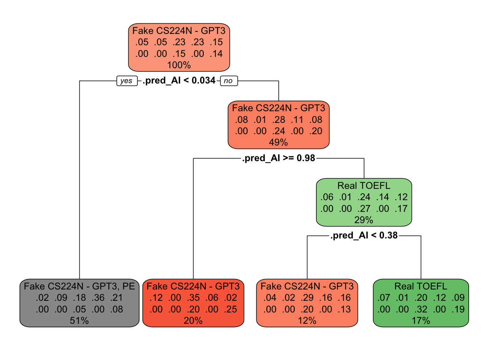

library(tidyverse)
library(tidytuesdayR)
library(psych)
library(brms)
library(viridis)
library(car)
library(WRS2)
library(randomForest)
library(rpart)
library(rpart.plot)GPT Detectors
Disclaimer
This is a data analytics/science project, focusing on the analysis of a TidyTuesday project. I have no intention to influence in any way any AI and/or AI detector company.
The Data
The data comes from the 29th Tidy Tuesday Projects (see more:https://github.com/rfordatascience/tidytuesday) in 2023. The Data is based on the paper of Liang et al.’s (2023) paper, which investigates the reliability of the GPT detectors.
The data
dataset <- tt_load("2023-07-18")---- Compiling #TidyTuesday Information for 2023-07-18 ----
--- There is 1 file available ---
── Downloading files ───────────────────────────────────────────────────────────
1 of 1: "detectors.csv"names(dataset)[1] "detectors"detectors <- dataset$detectors
str(detectors)spc_tbl_ [6,185 × 9] (S3: spec_tbl_df/tbl_df/tbl/data.frame)
$ kind : chr [1:6185] "Human" "Human" "Human" "AI" ...
$ .pred_AI : num [1:6185] 0.999994 0.828145 0.000214 0 0.001784 ...
$ .pred_class: chr [1:6185] "AI" "AI" "Human" "Human" ...
$ detector : chr [1:6185] "Sapling" "Crossplag" "Crossplag" "ZeroGPT" ...
$ native : chr [1:6185] "No" "No" "Yes" NA ...
$ name : chr [1:6185] "Real TOEFL" "Real TOEFL" "Real College Essays" "Fake CS224N - GPT3" ...
$ model : chr [1:6185] "Human" "Human" "Human" "GPT3" ...
$ document_id: num [1:6185] 497 278 294 671 717 855 533 484 781 460 ...
$ prompt : chr [1:6185] NA NA NA "Plain" ...
- attr(*, "spec")=
.. cols(
.. kind = col_character(),
.. .pred_AI = col_double(),
.. .pred_class = col_character(),
.. detector = col_character(),
.. native = col_character(),
.. name = col_character(),
.. model = col_character(),
.. document_id = col_double(),
.. prompt = col_character()
.. )
- attr(*, "problems")=<externalptr> class(detectors)[1] "spec_tbl_df" "tbl_df" "tbl" "data.frame" detectors_df <- as.data.frame(detectors)
str(detectors_df)'data.frame': 6185 obs. of 9 variables:
$ kind : chr "Human" "Human" "Human" "AI" ...
$ .pred_AI : num 0.999994 0.828145 0.000214 0 0.001784 ...
$ .pred_class: chr "AI" "AI" "Human" "Human" ...
$ detector : chr "Sapling" "Crossplag" "Crossplag" "ZeroGPT" ...
$ native : chr "No" "No" "Yes" NA ...
$ name : chr "Real TOEFL" "Real TOEFL" "Real College Essays" "Fake CS224N - GPT3" ...
$ model : chr "Human" "Human" "Human" "GPT3" ...
$ document_id: num 497 278 294 671 717 855 533 484 781 460 ...
$ prompt : chr NA NA NA "Plain" ...Investigating the Qualitiative data
table(detectors_df$kind)
AI Human
3717 2468 table(detectors_df$.pred_class)
AI Human
1607 4578 table(detectors_df$detector)
Crossplag GPTZero HFOpenAI OriginalityAI Quil
925 925 925 925 780
Sapling ZeroGPT
780 925 detectors_df$detector <- as.factor(detectors_df$detector)
table(detectors_df$native)
No Yes
637 1831 table(detectors_df$name)
Fake College Essays - GPT3
217
Fake College Essays - GPT3 Prompt Engineered
217
Fake CS224N - GPT3
1015
Fake CS224N - GPT3, PE
1015
Fake TOEFL - GPT4 - PE
637
Real College Essays
490
Real CS224N
725
Real TOEFL
637
US 8th grade essay
616
US 8th grade essay - GPT simplify
616 detectors_df$name <- as.factor(detectors_df$name)
table(detectors_df$model)
GPT3 GPT4 Human
1449 2268 2468 detectors_df$model<- as.factor(detectors_df$model)
table(detectors_df$prompt)
Elevate using literary Elevate using technical Enhance like native
217 1015 637
Plain Simplify like non-native
1232 616 detectors_df$prompt<- as.factor(detectors_df$prompt)
detectors_df$native <- as.factor(detectors_df$native)
#recoding native - making sure 1 is for yes and no for 0
detectors_df <- detectors_df %>%
mutate(native_2 = case_when(
native== "No" ~ 0,
native== "Yes" ~ 1))
str(detectors_df)'data.frame': 6185 obs. of 10 variables:
$ kind : chr "Human" "Human" "Human" "AI" ...
$ .pred_AI : num 0.999994 0.828145 0.000214 0 0.001784 ...
$ .pred_class: chr "AI" "AI" "Human" "Human" ...
$ detector : Factor w/ 7 levels "Crossplag","GPTZero",..: 6 1 1 7 4 3 3 1 7 6 ...
$ native : Factor w/ 2 levels "No","Yes": 1 1 2 NA NA 2 NA NA 2 1 ...
$ name : Factor w/ 10 levels "Fake College Essays - GPT3",..: 8 8 6 3 4 7 3 4 7 8 ...
$ model : Factor w/ 3 levels "GPT3","GPT4",..: 3 3 3 1 2 3 1 2 3 3 ...
$ document_id: num 497 278 294 671 717 855 533 484 781 460 ...
$ prompt : Factor w/ 5 levels "Elevate using literary",..: NA NA NA 4 2 NA 4 2 NA NA ...
$ native_2 : num 0 0 1 NA NA 1 NA NA 1 0 ...#recoding .pred_cllass Investigating the Quantitative data
describe(detectors_df$.pred_AI) vars n mean sd median trimmed mad min max range skew kurtosis se
X1 1 6185 0.27 0.4 0 0.21 0 0 1 1 1.06 -0.7 0.01describe(detectors_df$document_id) vars n mean sd median trimmed mad min max range skew kurtosis
X1 1 6185 445.04 261.27 438 441.03 324.69 1 926 925 0.09 -1.11
se
X1 3.32Missing Values
colSums(is.na(detectors_df)) kind .pred_AI .pred_class detector native name
0 0 0 0 3717 0
model document_id prompt native_2
0 0 2468 3717 # It is importasnt. to not impute the missing values, because in "native" variable: NA indicates that it was not written by a human. and in the "prompt" variable NA-s indicating real examinations (like Real TOEFL).First model
In the first model I am using binary logistic regression. Where I am curious is a GPT detector detects non-native people as AI. ##Frequentist appproach #Baseline model_1
model_baseline<- glm(native_2 ~ 1, data= detectors_df, family= "binomial")Test model_1
model_1<- glm(native_2 ~ .pred_AI, data= detectors_df, family= "binomial")
anova(model_baseline, model_1, test= "LRT") #<- indicating significant diffference between the nullmodel and the testmodelAnalysis of Deviance Table
Model 1: native_2 ~ 1
Model 2: native_2 ~ .pred_AI
Resid. Df Resid. Dev Df Deviance Pr(>Chi)
1 2467 2818.8
2 2466 1681.8 1 1136.9 < 2.2e-16 ***
---
Signif. codes: 0 '***' 0.001 '**' 0.01 '*' 0.05 '.' 0.1 ' ' 1summary(model_1)
Call:
glm(formula = native_2 ~ .pred_AI, family = "binomial", data = detectors_df)
Coefficients:
Estimate Std. Error z value Pr(>|z|)
(Intercept) 2.26933 0.07616 29.80 <2e-16 ***
.pred_AI -5.14785 0.20917 -24.61 <2e-16 ***
---
Signif. codes: 0 '***' 0.001 '**' 0.01 '*' 0.05 '.' 0.1 ' ' 1
(Dispersion parameter for binomial family taken to be 1)
Null deviance: 2818.8 on 2467 degrees of freedom
Residual deviance: 1681.8 on 2466 degrees of freedom
(3717 observations deleted due to missingness)
AIC: 1685.8
Number of Fisher Scoring iterations: 5# AIC: 1685.8423Bayesian approach #Building the Bayes- null-model
set.seed(123)
bayes_model_0 <- brm(native_2 ~ 1,
data = detectors_df,
family = bernoulli(link = "logit"), seed=123,
save_pars = save_pars(all = TRUE))Warning: Rows containing NAs were excluded from the model.Compiling Stan program...Start sampling
SAMPLING FOR MODEL 'anon_model' NOW (CHAIN 1).
Chain 1:
Chain 1: Gradient evaluation took 8.5e-05 seconds
Chain 1: 1000 transitions using 10 leapfrog steps per transition would take 0.85 seconds.
Chain 1: Adjust your expectations accordingly!
Chain 1:
Chain 1:
Chain 1: Iteration: 1 / 2000 [ 0%] (Warmup)
Chain 1: Iteration: 200 / 2000 [ 10%] (Warmup)
Chain 1: Iteration: 400 / 2000 [ 20%] (Warmup)
Chain 1: Iteration: 600 / 2000 [ 30%] (Warmup)
Chain 1: Iteration: 800 / 2000 [ 40%] (Warmup)
Chain 1: Iteration: 1000 / 2000 [ 50%] (Warmup)
Chain 1: Iteration: 1001 / 2000 [ 50%] (Sampling)
Chain 1: Iteration: 1200 / 2000 [ 60%] (Sampling)
Chain 1: Iteration: 1400 / 2000 [ 70%] (Sampling)
Chain 1: Iteration: 1600 / 2000 [ 80%] (Sampling)
Chain 1: Iteration: 1800 / 2000 [ 90%] (Sampling)
Chain 1: Iteration: 2000 / 2000 [100%] (Sampling)
Chain 1:
Chain 1: Elapsed Time: 0.176 seconds (Warm-up)
Chain 1: 0.189 seconds (Sampling)
Chain 1: 0.365 seconds (Total)
Chain 1:
SAMPLING FOR MODEL 'anon_model' NOW (CHAIN 2).
Chain 2:
Chain 2: Gradient evaluation took 4.7e-05 seconds
Chain 2: 1000 transitions using 10 leapfrog steps per transition would take 0.47 seconds.
Chain 2: Adjust your expectations accordingly!
Chain 2:
Chain 2:
Chain 2: Iteration: 1 / 2000 [ 0%] (Warmup)
Chain 2: Iteration: 200 / 2000 [ 10%] (Warmup)
Chain 2: Iteration: 400 / 2000 [ 20%] (Warmup)
Chain 2: Iteration: 600 / 2000 [ 30%] (Warmup)
Chain 2: Iteration: 800 / 2000 [ 40%] (Warmup)
Chain 2: Iteration: 1000 / 2000 [ 50%] (Warmup)
Chain 2: Iteration: 1001 / 2000 [ 50%] (Sampling)
Chain 2: Iteration: 1200 / 2000 [ 60%] (Sampling)
Chain 2: Iteration: 1400 / 2000 [ 70%] (Sampling)
Chain 2: Iteration: 1600 / 2000 [ 80%] (Sampling)
Chain 2: Iteration: 1800 / 2000 [ 90%] (Sampling)
Chain 2: Iteration: 2000 / 2000 [100%] (Sampling)
Chain 2:
Chain 2: Elapsed Time: 0.176 seconds (Warm-up)
Chain 2: 0.181 seconds (Sampling)
Chain 2: 0.357 seconds (Total)
Chain 2:
SAMPLING FOR MODEL 'anon_model' NOW (CHAIN 3).
Chain 3:
Chain 3: Gradient evaluation took 5e-05 seconds
Chain 3: 1000 transitions using 10 leapfrog steps per transition would take 0.5 seconds.
Chain 3: Adjust your expectations accordingly!
Chain 3:
Chain 3:
Chain 3: Iteration: 1 / 2000 [ 0%] (Warmup)
Chain 3: Iteration: 200 / 2000 [ 10%] (Warmup)
Chain 3: Iteration: 400 / 2000 [ 20%] (Warmup)
Chain 3: Iteration: 600 / 2000 [ 30%] (Warmup)
Chain 3: Iteration: 800 / 2000 [ 40%] (Warmup)
Chain 3: Iteration: 1000 / 2000 [ 50%] (Warmup)
Chain 3: Iteration: 1001 / 2000 [ 50%] (Sampling)
Chain 3: Iteration: 1200 / 2000 [ 60%] (Sampling)
Chain 3: Iteration: 1400 / 2000 [ 70%] (Sampling)
Chain 3: Iteration: 1600 / 2000 [ 80%] (Sampling)
Chain 3: Iteration: 1800 / 2000 [ 90%] (Sampling)
Chain 3: Iteration: 2000 / 2000 [100%] (Sampling)
Chain 3:
Chain 3: Elapsed Time: 0.178 seconds (Warm-up)
Chain 3: 0.182 seconds (Sampling)
Chain 3: 0.36 seconds (Total)
Chain 3:
SAMPLING FOR MODEL 'anon_model' NOW (CHAIN 4).
Chain 4:
Chain 4: Gradient evaluation took 5.2e-05 seconds
Chain 4: 1000 transitions using 10 leapfrog steps per transition would take 0.52 seconds.
Chain 4: Adjust your expectations accordingly!
Chain 4:
Chain 4:
Chain 4: Iteration: 1 / 2000 [ 0%] (Warmup)
Chain 4: Iteration: 200 / 2000 [ 10%] (Warmup)
Chain 4: Iteration: 400 / 2000 [ 20%] (Warmup)
Chain 4: Iteration: 600 / 2000 [ 30%] (Warmup)
Chain 4: Iteration: 800 / 2000 [ 40%] (Warmup)
Chain 4: Iteration: 1000 / 2000 [ 50%] (Warmup)
Chain 4: Iteration: 1001 / 2000 [ 50%] (Sampling)
Chain 4: Iteration: 1200 / 2000 [ 60%] (Sampling)
Chain 4: Iteration: 1400 / 2000 [ 70%] (Sampling)
Chain 4: Iteration: 1600 / 2000 [ 80%] (Sampling)
Chain 4: Iteration: 1800 / 2000 [ 90%] (Sampling)
Chain 4: Iteration: 2000 / 2000 [100%] (Sampling)
Chain 4:
Chain 4: Elapsed Time: 0.181 seconds (Warm-up)
Chain 4: 0.169 seconds (Sampling)
Chain 4: 0.35 seconds (Total)
Chain 4: Building the first model
set.seed(123)
bayes_model_1 <- brm(native_2~ .pred_AI,
data = detectors_df,
family = bernoulli(link = "logit"), seed=123,
save_pars = save_pars(all = TRUE))Warning: Rows containing NAs were excluded from the model.Compiling Stan program...Start sampling
SAMPLING FOR MODEL 'anon_model' NOW (CHAIN 1).
Chain 1:
Chain 1: Gradient evaluation took 3.4e-05 seconds
Chain 1: 1000 transitions using 10 leapfrog steps per transition would take 0.34 seconds.
Chain 1: Adjust your expectations accordingly!
Chain 1:
Chain 1:
Chain 1: Iteration: 1 / 2000 [ 0%] (Warmup)
Chain 1: Iteration: 200 / 2000 [ 10%] (Warmup)
Chain 1: Iteration: 400 / 2000 [ 20%] (Warmup)
Chain 1: Iteration: 600 / 2000 [ 30%] (Warmup)
Chain 1: Iteration: 800 / 2000 [ 40%] (Warmup)
Chain 1: Iteration: 1000 / 2000 [ 50%] (Warmup)
Chain 1: Iteration: 1001 / 2000 [ 50%] (Sampling)
Chain 1: Iteration: 1200 / 2000 [ 60%] (Sampling)
Chain 1: Iteration: 1400 / 2000 [ 70%] (Sampling)
Chain 1: Iteration: 1600 / 2000 [ 80%] (Sampling)
Chain 1: Iteration: 1800 / 2000 [ 90%] (Sampling)
Chain 1: Iteration: 2000 / 2000 [100%] (Sampling)
Chain 1:
Chain 1: Elapsed Time: 0.117 seconds (Warm-up)
Chain 1: 0.098 seconds (Sampling)
Chain 1: 0.215 seconds (Total)
Chain 1:
SAMPLING FOR MODEL 'anon_model' NOW (CHAIN 2).
Chain 2:
Chain 2: Gradient evaluation took 3e-05 seconds
Chain 2: 1000 transitions using 10 leapfrog steps per transition would take 0.3 seconds.
Chain 2: Adjust your expectations accordingly!
Chain 2:
Chain 2:
Chain 2: Iteration: 1 / 2000 [ 0%] (Warmup)
Chain 2: Iteration: 200 / 2000 [ 10%] (Warmup)
Chain 2: Iteration: 400 / 2000 [ 20%] (Warmup)
Chain 2: Iteration: 600 / 2000 [ 30%] (Warmup)
Chain 2: Iteration: 800 / 2000 [ 40%] (Warmup)
Chain 2: Iteration: 1000 / 2000 [ 50%] (Warmup)
Chain 2: Iteration: 1001 / 2000 [ 50%] (Sampling)
Chain 2: Iteration: 1200 / 2000 [ 60%] (Sampling)
Chain 2: Iteration: 1400 / 2000 [ 70%] (Sampling)
Chain 2: Iteration: 1600 / 2000 [ 80%] (Sampling)
Chain 2: Iteration: 1800 / 2000 [ 90%] (Sampling)
Chain 2: Iteration: 2000 / 2000 [100%] (Sampling)
Chain 2:
Chain 2: Elapsed Time: 0.114 seconds (Warm-up)
Chain 2: 0.12 seconds (Sampling)
Chain 2: 0.234 seconds (Total)
Chain 2:
SAMPLING FOR MODEL 'anon_model' NOW (CHAIN 3).
Chain 3:
Chain 3: Gradient evaluation took 2.4e-05 seconds
Chain 3: 1000 transitions using 10 leapfrog steps per transition would take 0.24 seconds.
Chain 3: Adjust your expectations accordingly!
Chain 3:
Chain 3:
Chain 3: Iteration: 1 / 2000 [ 0%] (Warmup)
Chain 3: Iteration: 200 / 2000 [ 10%] (Warmup)
Chain 3: Iteration: 400 / 2000 [ 20%] (Warmup)
Chain 3: Iteration: 600 / 2000 [ 30%] (Warmup)
Chain 3: Iteration: 800 / 2000 [ 40%] (Warmup)
Chain 3: Iteration: 1000 / 2000 [ 50%] (Warmup)
Chain 3: Iteration: 1001 / 2000 [ 50%] (Sampling)
Chain 3: Iteration: 1200 / 2000 [ 60%] (Sampling)
Chain 3: Iteration: 1400 / 2000 [ 70%] (Sampling)
Chain 3: Iteration: 1600 / 2000 [ 80%] (Sampling)
Chain 3: Iteration: 1800 / 2000 [ 90%] (Sampling)
Chain 3: Iteration: 2000 / 2000 [100%] (Sampling)
Chain 3:
Chain 3: Elapsed Time: 0.116 seconds (Warm-up)
Chain 3: 0.106 seconds (Sampling)
Chain 3: 0.222 seconds (Total)
Chain 3:
SAMPLING FOR MODEL 'anon_model' NOW (CHAIN 4).
Chain 4:
Chain 4: Gradient evaluation took 2.7e-05 seconds
Chain 4: 1000 transitions using 10 leapfrog steps per transition would take 0.27 seconds.
Chain 4: Adjust your expectations accordingly!
Chain 4:
Chain 4:
Chain 4: Iteration: 1 / 2000 [ 0%] (Warmup)
Chain 4: Iteration: 200 / 2000 [ 10%] (Warmup)
Chain 4: Iteration: 400 / 2000 [ 20%] (Warmup)
Chain 4: Iteration: 600 / 2000 [ 30%] (Warmup)
Chain 4: Iteration: 800 / 2000 [ 40%] (Warmup)
Chain 4: Iteration: 1000 / 2000 [ 50%] (Warmup)
Chain 4: Iteration: 1001 / 2000 [ 50%] (Sampling)
Chain 4: Iteration: 1200 / 2000 [ 60%] (Sampling)
Chain 4: Iteration: 1400 / 2000 [ 70%] (Sampling)
Chain 4: Iteration: 1600 / 2000 [ 80%] (Sampling)
Chain 4: Iteration: 1800 / 2000 [ 90%] (Sampling)
Chain 4: Iteration: 2000 / 2000 [100%] (Sampling)
Chain 4:
Chain 4: Elapsed Time: 0.112 seconds (Warm-up)
Chain 4: 0.112 seconds (Sampling)
Chain 4: 0.224 seconds (Total)
Chain 4: set.seed(123)
bayes_factor(bayes_model_1,
bayes_model_0)Iteration: 1
Iteration: 2
Iteration: 3
Iteration: 4Warning: effective sample size cannot be calculated, has been replaced by
number of samples.Iteration: 1
Iteration: 2
Iteration: 3
Iteration: 4Estimated Bayes factor in favor of bayes_model_1 over bayes_model_0: 5279469617055601319225400310393509906609598470346768029781914372405871340219842665494234462069276108848576295541789114125257943745732674642097960246791543689693205350613487233843060404115539685475025738604964026080978227099911492590842396966649856.00000summary(bayes_model_1) Family: bernoulli
Links: mu = logit
Formula: native_2 ~ .pred_AI
Data: detectors_df (Number of observations: 2468)
Draws: 4 chains, each with iter = 2000; warmup = 1000; thin = 1;
total post-warmup draws = 4000
Regression Coefficients:
Estimate Est.Error l-95% CI u-95% CI Rhat Bulk_ESS Tail_ESS
Intercept 2.27 0.08 2.12 2.42 1.00 3027 2327
.pred_AI -5.16 0.21 -5.59 -4.76 1.00 3633 2381
Draws were sampled using sampling(NUTS). For each parameter, Bulk_ESS
and Tail_ESS are effective sample size measures, and Rhat is the potential
scale reduction factor on split chains (at convergence, Rhat = 1).Visualisation
smooth_color <- viridis_pal(option = "viridis")(1)
ggplot(detectors_df, aes(x=.pred_AI,
y= native_2,
color = .pred_AI))+
geom_jitter(height = .05,
alpha = 0.5,
size = 2) +
geom_smooth(method = "glm",
method.args = list(family ="binomial"),
se = F,
color = smooth_color)+
labs(x = "Probability of the text is AI generated.",
y= "Native English or not")+
scale_y_continuous(breaks = c(0, 1),labels = c("Non-Native", "Native"))+
theme_minimal() +
scale_color_viridis_c(option = "viridis")+
theme(panel.grid.minor = element_blank(),
panel.grid.major = element_blank(),
panel.border = element_blank(),
axis.line = element_line(),
plot.background = element_rect(fill = "white"),
axis.text.x = element_text(color="black", size =8),
axis.text.y = element_text(color="black", size = 10),
axis.text = element_text(color="black"),
axis.title = element_text(color = "black", size = 11),
legend.title = element_blank())`geom_smooth()` using formula = 'y ~ x'Warning: Removed 3717 rows containing non-finite outside the scale range
(`stat_smooth()`).Warning: Removed 3717 rows containing missing values or values outside the scale range
(`geom_point()`).Here I am courius which detector detects the most of the text as GPT (more precisely: which detector gives higher probability that a text is written by AI)
#Normality check for question 2 with Shapiro-Wilk test
by(detectors_df$.pred_AI, detectors_df$detector, function(x){shapiro.test(x)})detectors_df$detector: Crossplag
Shapiro-Wilk normality test
data: x
W = 0.62509, p-value < 2.2e-16
------------------------------------------------------------
detectors_df$detector: GPTZero
Shapiro-Wilk normality test
data: x
W = 0.5182, p-value < 2.2e-16
------------------------------------------------------------
detectors_df$detector: HFOpenAI
Shapiro-Wilk normality test
data: x
W = 0.62307, p-value < 2.2e-16
------------------------------------------------------------
detectors_df$detector: OriginalityAI
Shapiro-Wilk normality test
data: x
W = 0.69843, p-value < 2.2e-16
------------------------------------------------------------
detectors_df$detector: Quil
Shapiro-Wilk normality test
data: x
W = 0.68985, p-value < 2.2e-16
------------------------------------------------------------
detectors_df$detector: Sapling
Shapiro-Wilk normality test
data: x
W = 0.63365, p-value < 2.2e-16
------------------------------------------------------------
detectors_df$detector: ZeroGPT
Shapiro-Wilk normality test
data: x
W = 0.66345, p-value < 2.2e-16Equality of variances check with Levene-test
leveneTest(.pred_AI~ detector, data= detectors_df)Levene's Test for Homogeneity of Variance (center = median)
Df F value Pr(>F)
group 6 40.552 < 2.2e-16 ***
6178
---
Signif. codes: 0 '***' 0.001 '**' 0.01 '*' 0.05 '.' 0.1 ' ' 1Because both asumption did not met, I used Welch test on rang-numbers
wrs2 <- t1way(.pred_AI~ detector, data= detectors_df, tr= 0.2)
print(wrs2)Call:
t1way(formula = .pred_AI ~ detector, data = detectors_df, tr = 0.2)
Test statistic: F = 57.3551
Degrees of freedom 1: 6
Degrees of freedom 2: 1445.95
p-value: 0
Explanatory measure of effect size: 0.2
Bootstrap CI: [0.17; 0.23]#for exact p-value:
wrs2$p.value #<- here also 0 indicating it is extremely low[1] 0#To determine which group is differs from each other:
post_hoc_bon <- lincon(.pred_AI~ detector, data= detectors_df,method = "bonferroni")
print(post_hoc_bon)Call:
lincon(formula = .pred_AI ~ detector, data = detectors_df, method = "bonferroni")
psihat ci.lower ci.upper p.value
Crossplag vs. GPTZero 0.05847 0.01842 0.09852 0.00024
Crossplag vs. HFOpenAI -0.01064 -0.07240 0.05111 1.00000
Crossplag vs. OriginalityAI -0.19716 -0.27890 -0.11541 0.00000
Crossplag vs. Quil -0.20073 -0.28998 -0.11148 0.00000
Crossplag vs. Sapling -0.19560 -0.28878 -0.10242 0.00000
Crossplag vs. ZeroGPT -0.01363 -0.06562 0.03836 1.00000
GPTZero vs. HFOpenAI -0.06911 -0.11739 -0.02084 0.00036
GPTZero vs. OriginalityAI -0.25563 -0.32773 -0.18352 0.00000
GPTZero vs. Quil -0.25920 -0.33971 -0.17869 0.00000
GPTZero vs. Sapling -0.25407 -0.33892 -0.16923 0.00000
GPTZero vs. ZeroGPT -0.07210 -0.10702 -0.03718 0.00000
HFOpenAI vs. OriginalityAI -0.18651 -0.27259 -0.10044 0.00000
HFOpenAI vs. Quil -0.19009 -0.28331 -0.09686 0.00000
HFOpenAI vs. Sapling -0.18496 -0.28195 -0.08797 0.00000
HFOpenAI vs. ZeroGPT -0.00299 -0.06154 0.05557 1.00000
OriginalityAI vs. Quil -0.00357 -0.11109 0.10395 1.00000
OriginalityAI vs. Sapling 0.00156 -0.10925 0.11236 1.00000
OriginalityAI vs. ZeroGPT 0.18353 0.10417 0.26289 0.00000
Quil vs. Sapling 0.00513 -0.11132 0.12157 1.00000
Quil vs. ZeroGPT 0.18710 0.10003 0.27417 0.00000
Sapling vs. ZeroGPT 0.18197 0.09089 0.27306 0.00000#The next is for determine which detector prediucts the most
comparisons <- post_hoc_bon$comp[, 1:2]
psihat_values <- post_hoc_bon$comp[, 3]
# Create a data frame to hold the comparisons and psihat values
comparison_df <- data.frame(comparisons, psihat_values)
colnames(comparison_df) <- c("Group1", "Group2", "psihat")
# Calculate the aggregate score for each name
aggregate_scores <- comparison_df %>%
pivot_longer(cols = c(Group1, Group2), names_to = "Group", values_to = "value") %>%
group_by(value) %>%
summarise(score = sum(abs(psihat)))
# Rank the names based on the aggregate scores
ranked_scores <- aggregate_scores %>%
arrange(score)
# Extract the group names
group_names <- post_hoc_bon$fnames
# Create a data frame to map group indices to names
group_mapping <- data.frame(value = 1:length(group_names), name = group_names)
# Merge the ranked scores with the group names
ranked_scores_with_names <- merge(ranked_scores, group_mapping, by = "value")
print(ranked_scores_with_names) value score name
1 1 0.6762282 Crossplag
2 2 0.9685871 GPTZero
3 3 0.6443019 HFOpenAI
4 4 0.8279541 OriginalityAI
5 5 0.8458100 Quil
6 6 0.8232885 Sapling
7 7 0.6413155 ZeroGPTAlthough There are detectors that are significantly predicting more GPT, which one is hallucinating?
model_2<- glm(native_2 ~ .pred_AI+ detector+ .pred_AI:detector, data= detectors_df, family= "binomial")
anova(model_baseline, model_2, test= "LRT") #<- indicating significant diffference between the nullmodel and the testmodelAnalysis of Deviance Table
Model 1: native_2 ~ 1
Model 2: native_2 ~ .pred_AI + detector + .pred_AI:detector
Resid. Df Resid. Dev Df Deviance Pr(>Chi)
1 2467 2818.8
2 2454 1617.0 13 1201.8 < 2.2e-16 ***
---
Signif. codes: 0 '***' 0.001 '**' 0.01 '*' 0.05 '.' 0.1 ' ' 1summary(model_2)
Call:
glm(formula = native_2 ~ .pred_AI + detector + .pred_AI:detector,
family = "binomial", data = detectors_df)
Coefficients:
Estimate Std. Error z value Pr(>|z|)
(Intercept) 2.23787 0.18703 11.965 < 2e-16 ***
.pred_AI -4.53956 0.47831 -9.491 < 2e-16 ***
detectorGPTZero -0.15057 0.25436 -0.592 0.5539
detectorHFOpenAI 0.10243 0.26952 0.380 0.7039
detectorOriginalityAI 0.70254 0.31351 2.241 0.0250 *
detectorQuil -0.06504 0.31251 -0.208 0.8351
detectorSapling -0.47211 0.28117 -1.679 0.0931 .
detectorZeroGPT 0.47927 0.29604 1.619 0.1055
.pred_AI:detectorGPTZero -2.91069 1.19047 -2.445 0.0145 *
.pred_AI:detectorHFOpenAI -0.37957 0.69579 -0.546 0.5854
.pred_AI:detectorOriginalityAI -0.52451 0.65986 -0.795 0.4267
.pred_AI:detectorQuil -0.51398 0.73502 -0.699 0.4844
.pred_AI:detectorSapling 0.39375 0.68672 0.573 0.5664
.pred_AI:detectorZeroGPT -5.90289 1.39136 -4.243 2.21e-05 ***
---
Signif. codes: 0 '***' 0.001 '**' 0.01 '*' 0.05 '.' 0.1 ' ' 1
(Dispersion parameter for binomial family taken to be 1)
Null deviance: 2818.8 on 2467 degrees of freedom
Residual deviance: 1617.0 on 2454 degrees of freedom
(3717 observations deleted due to missingness)
AIC: 1645
Number of Fisher Scoring iterations: 6#AIC: 1644.99492/B is there any difference?
model_2_b<- glm(native_2 ~ .pred_AI+detector, data= detectors_df, family= "binomial")
anova(model_baseline, model_2_b, test= "LRT") #<- indicating significant diffference between the nullmodel and the testmodelAnalysis of Deviance Table
Model 1: native_2 ~ 1
Model 2: native_2 ~ .pred_AI + detector
Resid. Df Resid. Dev Df Deviance Pr(>Chi)
1 2467 2818.8
2 2460 1655.7 7 1163.1 < 2.2e-16 ***
---
Signif. codes: 0 '***' 0.001 '**' 0.01 '*' 0.05 '.' 0.1 ' ' 1summary(model_2_b)
Call:
glm(formula = native_2 ~ .pred_AI + detector, family = "binomial",
data = detectors_df)
Coefficients:
Estimate Std. Error z value Pr(>|z|)
(Intercept) 2.4055 0.1691 14.224 <2e-16 ***
.pred_AI -5.3053 0.2182 -24.316 <2e-16 ***
detectorGPTZero -0.4645 0.2234 -2.079 0.0376 *
detectorHFOpenAI 0.0161 0.2326 0.069 0.9448
detectorOriginalityAI 0.6253 0.2533 2.469 0.0136 *
detectorQuil -0.1667 0.2636 -0.632 0.5272
detectorSapling -0.4414 0.2606 -1.694 0.0903 .
detectorZeroGPT -0.3050 0.2208 -1.381 0.1672
---
Signif. codes: 0 '***' 0.001 '**' 0.01 '*' 0.05 '.' 0.1 ' ' 1
(Dispersion parameter for binomial family taken to be 1)
Null deviance: 2818.8 on 2467 degrees of freedom
Residual deviance: 1655.7 on 2460 degrees of freedom
(3717 observations deleted due to missingness)
AIC: 1671.7
Number of Fisher Scoring iterations: 5#AIC: 1671.699Now splitting the data into significant and non-significant detectors based on the model_2 First removing the significant detectors from the model (also the interacting ones. )
non_sig_pred_1 <- detectors_df %>%
filter(!detector %in% c("GPTZero", "OriginalityAI", "ZeroGPT"))
model_baseline_2<- glm(native_2 ~ 1, data= non_sig_pred_1, family= "binomial")
model_3<- glm(native_2 ~ .pred_AI+ detector+ .pred_AI: detector, data= non_sig_pred_1, family= "binomial")
anova(model_baseline_2, model_3, test= "LRT") #<- indicating significant diffference between the nullmodel and the testmodelAnalysis of Deviance Table
Model 1: native_2 ~ 1
Model 2: native_2 ~ .pred_AI + detector + .pred_AI:detector
Resid. Df Resid. Dev Df Deviance Pr(>Chi)
1 1285 1532.42
2 1278 932.79 7 599.64 < 2.2e-16 ***
---
Signif. codes: 0 '***' 0.001 '**' 0.01 '*' 0.05 '.' 0.1 ' ' 1summary(model_3)
Call:
glm(formula = native_2 ~ .pred_AI + detector + .pred_AI:detector,
family = "binomial", data = non_sig_pred_1)
Coefficients:
Estimate Std. Error z value Pr(>|z|)
(Intercept) 2.23787 0.18703 11.965 <2e-16 ***
.pred_AI -4.53956 0.47831 -9.491 <2e-16 ***
detectorHFOpenAI 0.10243 0.26952 0.380 0.7039
detectorQuil -0.06504 0.31251 -0.208 0.8351
detectorSapling -0.47211 0.28117 -1.679 0.0931 .
.pred_AI:detectorHFOpenAI -0.37957 0.69579 -0.546 0.5854
.pred_AI:detectorQuil -0.51398 0.73502 -0.699 0.4844
.pred_AI:detectorSapling 0.39375 0.68672 0.573 0.5664
---
Signif. codes: 0 '***' 0.001 '**' 0.01 '*' 0.05 '.' 0.1 ' ' 1
(Dispersion parameter for binomial family taken to be 1)
Null deviance: 1532.42 on 1285 degrees of freedom
Residual deviance: 932.79 on 1278 degrees of freedom
(2124 observations deleted due to missingness)
AIC: 948.79
Number of Fisher Scoring iterations: 5#AIC: 948.78545
#Testing the OG model too:
model_1_1<- glm(native_2 ~ .pred_AI, data= non_sig_pred_1, family= "binomial")
anova(model_baseline_2, model_1_1, test= "LRT")Analysis of Deviance Table
Model 1: native_2 ~ 1
Model 2: native_2 ~ .pred_AI
Resid. Df Resid. Dev Df Deviance Pr(>Chi)
1 1285 1532.42
2 1284 938.24 1 594.18 < 2.2e-16 ***
---
Signif. codes: 0 '***' 0.001 '**' 0.01 '*' 0.05 '.' 0.1 ' ' 1summary(model_1_1)
Call:
glm(formula = native_2 ~ .pred_AI, family = "binomial", data = non_sig_pred_1)
Coefficients:
Estimate Std. Error z value Pr(>|z|)
(Intercept) 2.1607 0.1029 21.00 <2e-16 ***
.pred_AI -4.6735 0.2514 -18.59 <2e-16 ***
---
Signif. codes: 0 '***' 0.001 '**' 0.01 '*' 0.05 '.' 0.1 ' ' 1
(Dispersion parameter for binomial family taken to be 1)
Null deviance: 1532.42 on 1285 degrees of freedom
Residual deviance: 938.24 on 1284 degrees of freedom
(2124 observations deleted due to missingness)
AIC: 942.24
Number of Fisher Scoring iterations: 4#AIC: 942.23976
#removing the non-significant ones
sig_pred_1 <- detectors_df %>%
filter(!detector %in% c("HFOpenAI", "Quil", "Sapling","OriginalityAI"))
model_baseline_3<- glm(native_2 ~ 1, data= sig_pred_1, family= "binomial")
model_4<- glm(native_2 ~ .pred_AI+ detector+ .pred_AI: detector, data= sig_pred_1, family= "binomial")
anova(model_baseline_3, model_4, test= "LRT") #<- indicating significant diffference between the nullmodel and the testmodelAnalysis of Deviance Table
Model 1: native_2 ~ 1
Model 2: native_2 ~ .pred_AI + detector + .pred_AI:detector
Resid. Df Resid. Dev Df Deviance Pr(>Chi)
1 1181 1277.60
2 1176 761.45 5 516.14 < 2.2e-16 ***
---
Signif. codes: 0 '***' 0.001 '**' 0.01 '*' 0.05 '.' 0.1 ' ' 1summary(model_4)
Call:
glm(formula = native_2 ~ .pred_AI + detector + .pred_AI:detector,
family = "binomial", data = sig_pred_1)
Coefficients:
Estimate Std. Error z value Pr(>|z|)
(Intercept) 2.2379 0.1870 11.965 < 2e-16 ***
.pred_AI -4.5396 0.4783 -9.491 < 2e-16 ***
detectorGPTZero -0.1506 0.2544 -0.592 0.5539
detectorZeroGPT 0.4793 0.2960 1.619 0.1055
.pred_AI:detectorGPTZero -2.9107 1.1905 -2.445 0.0145 *
.pred_AI:detectorZeroGPT -5.9029 1.3914 -4.243 2.21e-05 ***
---
Signif. codes: 0 '***' 0.001 '**' 0.01 '*' 0.05 '.' 0.1 ' ' 1
(Dispersion parameter for binomial family taken to be 1)
Null deviance: 1277.60 on 1181 degrees of freedom
Residual deviance: 761.45 on 1176 degrees of freedom
(1593 observations deleted due to missingness)
AIC: 773.45
Number of Fisher Scoring iterations: 6#AIC: 773.45435
#Testing the OG model too:
model_1_2<- glm(native_2 ~ .pred_AI, data= sig_pred_1, family= "binomial")
anova(model_baseline_3, model_1_2, test= "LRT")Analysis of Deviance Table
Model 1: native_2 ~ 1
Model 2: native_2 ~ .pred_AI
Resid. Df Resid. Dev Df Deviance Pr(>Chi)
1 1181 1277.6
2 1180 794.5 1 483.1 < 2.2e-16 ***
---
Signif. codes: 0 '***' 0.001 '**' 0.01 '*' 0.05 '.' 0.1 ' ' 1summary(model_1_2)
Call:
glm(formula = native_2 ~ .pred_AI, family = "binomial", data = sig_pred_1)
Coefficients:
Estimate Std. Error z value Pr(>|z|)
(Intercept) 2.2603 0.1076 21.01 <2e-16 ***
.pred_AI -6.1300 0.4028 -15.22 <2e-16 ***
---
Signif. codes: 0 '***' 0.001 '**' 0.01 '*' 0.05 '.' 0.1 ' ' 1
(Dispersion parameter for binomial family taken to be 1)
Null deviance: 1277.6 on 1181 degrees of freedom
Residual deviance: 794.5 on 1180 degrees of freedom
(1593 observations deleted due to missingness)
AIC: 798.5
Number of Fisher Scoring iterations: 5# AIC: 798.49782Now the same model, but without interaction
model_5 <- glm(native_2 ~ .pred_AI + detector, data= detectors_df, family= "binomial")
anova(model_baseline, model_5, test= "LRT")Analysis of Deviance Table
Model 1: native_2 ~ 1
Model 2: native_2 ~ .pred_AI + detector
Resid. Df Resid. Dev Df Deviance Pr(>Chi)
1 2467 2818.8
2 2460 1655.7 7 1163.1 < 2.2e-16 ***
---
Signif. codes: 0 '***' 0.001 '**' 0.01 '*' 0.05 '.' 0.1 ' ' 1summary(model_5)
Call:
glm(formula = native_2 ~ .pred_AI + detector, family = "binomial",
data = detectors_df)
Coefficients:
Estimate Std. Error z value Pr(>|z|)
(Intercept) 2.4055 0.1691 14.224 <2e-16 ***
.pred_AI -5.3053 0.2182 -24.316 <2e-16 ***
detectorGPTZero -0.4645 0.2234 -2.079 0.0376 *
detectorHFOpenAI 0.0161 0.2326 0.069 0.9448
detectorOriginalityAI 0.6253 0.2533 2.469 0.0136 *
detectorQuil -0.1667 0.2636 -0.632 0.5272
detectorSapling -0.4414 0.2606 -1.694 0.0903 .
detectorZeroGPT -0.3050 0.2208 -1.381 0.1672
---
Signif. codes: 0 '***' 0.001 '**' 0.01 '*' 0.05 '.' 0.1 ' ' 1
(Dispersion parameter for binomial family taken to be 1)
Null deviance: 2818.8 on 2467 degrees of freedom
Residual deviance: 1655.7 on 2460 degrees of freedom
(3717 observations deleted due to missingness)
AIC: 1671.7
Number of Fisher Scoring iterations: 5# AIC: 1671.699
#removing the significant groups
non_sig_pred_2 <- detectors_df %>%
filter(!detector %in% c("GPTZero", "OriginalityAI"))
model_baseline_4 <- glm(native_2 ~ 1, data= non_sig_pred_2, family= "binomial")
model_6 <- glm(native_2 ~ .pred_AI + detector, data= non_sig_pred_2, family= "binomial")
anova(model_baseline_4, model_6, test= "LRT")Analysis of Deviance Table
Model 1: native_2 ~ 1
Model 2: native_2 ~ .pred_AI + detector
Resid. Df Resid. Dev Df Deviance Pr(>Chi)
1 1679 1962.5
2 1674 1175.0 5 787.58 < 2.2e-16 ***
---
Signif. codes: 0 '***' 0.001 '**' 0.01 '*' 0.05 '.' 0.1 ' ' 1summary(model_6)
Call:
glm(formula = native_2 ~ .pred_AI + detector, family = "binomial",
data = non_sig_pred_2)
Coefficients:
Estimate Std. Error z value Pr(>|z|)
(Intercept) 2.37524 0.16997 13.975 <2e-16 ***
.pred_AI -5.16278 0.25751 -20.049 <2e-16 ***
detectorHFOpenAI 0.01684 0.22975 0.073 0.9416
detectorQuil -0.17347 0.25989 -0.667 0.5045
detectorSapling -0.43102 0.25784 -1.672 0.0946 .
detectorZeroGPT -0.29609 0.21875 -1.354 0.1759
---
Signif. codes: 0 '***' 0.001 '**' 0.01 '*' 0.05 '.' 0.1 ' ' 1
(Dispersion parameter for binomial family taken to be 1)
Null deviance: 1962.5 on 1679 degrees of freedom
Residual deviance: 1174.9 on 1674 degrees of freedom
(2655 observations deleted due to missingness)
AIC: 1186.9
Number of Fisher Scoring iterations: 5# AIC: 1186.9468
#Testing on the OG model
model_7 <- glm(native_2 ~ .pred_AI, data= non_sig_pred_2, family= "binomial")
anova(model_baseline_4, model_7, test= "LRT")Analysis of Deviance Table
Model 1: native_2 ~ 1
Model 2: native_2 ~ .pred_AI
Resid. Df Resid. Dev Df Deviance Pr(>Chi)
1 1679 1962.5
2 1678 1179.7 1 782.81 < 2.2e-16 ***
---
Signif. codes: 0 '***' 0.001 '**' 0.01 '*' 0.05 '.' 0.1 ' ' 1summary(model_7)
Call:
glm(formula = native_2 ~ .pred_AI, family = "binomial", data = non_sig_pred_2)
Coefficients:
Estimate Std. Error z value Pr(>|z|)
(Intercept) 2.21369 0.09085 24.37 <2e-16 ***
.pred_AI -5.13640 0.25309 -20.30 <2e-16 ***
---
Signif. codes: 0 '***' 0.001 '**' 0.01 '*' 0.05 '.' 0.1 ' ' 1
(Dispersion parameter for binomial family taken to be 1)
Null deviance: 1962.5 on 1679 degrees of freedom
Residual deviance: 1179.7 on 1678 degrees of freedom
(2655 observations deleted due to missingness)
AIC: 1183.7
Number of Fisher Scoring iterations: 5# AIC: 1183.7217
#Removing the non_significant ones
sig_pred_2 <- detectors_df %>%
filter(!detector %in% c("HFOpenAI", "Quil", "Sapling", "ZeroGPT"))
model_baseline_5 <- glm(native_2 ~ 1, data= sig_pred_2, family= "binomial")
model_8 <- glm(native_2 ~ .pred_AI+ detector, data= sig_pred_2, family= "binomial")
anova(model_baseline_5, model_8, test= "LRT")Analysis of Deviance Table
Model 1: native_2 ~ 1
Model 2: native_2 ~ .pred_AI + detector
Resid. Df Resid. Dev Df Deviance Pr(>Chi)
1 1181 1277.60
2 1178 774.91 3 502.69 < 2.2e-16 ***
---
Signif. codes: 0 '***' 0.001 '**' 0.01 '*' 0.05 '.' 0.1 ' ' 1summary(model_8)
Call:
glm(formula = native_2 ~ .pred_AI + detector, family = "binomial",
data = sig_pred_2)
Coefficients:
Estimate Std. Error z value Pr(>|z|)
(Intercept) 2.3879 0.1745 13.688 <2e-16 ***
.pred_AI -5.2223 0.3089 -16.908 <2e-16 ***
detectorGPTZero -0.4549 0.2236 -2.035 0.0419 *
detectorOriginalityAI 0.6119 0.2533 2.415 0.0157 *
---
Signif. codes: 0 '***' 0.001 '**' 0.01 '*' 0.05 '.' 0.1 ' ' 1
(Dispersion parameter for binomial family taken to be 1)
Null deviance: 1277.60 on 1181 degrees of freedom
Residual deviance: 774.91 on 1178 degrees of freedom
(1593 observations deleted due to missingness)
AIC: 782.91
Number of Fisher Scoring iterations: 5# AIC: 782.9127
#OG model:
model_9 <- glm(native_2 ~ .pred_AI, data= sig_pred_2, family= "binomial")
anova(model_baseline_5, model_9, test= "LRT")Analysis of Deviance Table
Model 1: native_2 ~ 1
Model 2: native_2 ~ .pred_AI
Resid. Df Resid. Dev Df Deviance Pr(>Chi)
1 1181 1277.60
2 1180 793.75 1 483.85 < 2.2e-16 ***
---
Signif. codes: 0 '***' 0.001 '**' 0.01 '*' 0.05 '.' 0.1 ' ' 1summary(model_9)
Call:
glm(formula = native_2 ~ .pred_AI, family = "binomial", data = sig_pred_2)
Coefficients:
Estimate Std. Error z value Pr(>|z|)
(Intercept) 2.3438 0.1122 20.89 <2e-16 ***
.pred_AI -4.9439 0.2914 -16.97 <2e-16 ***
---
Signif. codes: 0 '***' 0.001 '**' 0.01 '*' 0.05 '.' 0.1 ' ' 1
(Dispersion parameter for binomial family taken to be 1)
Null deviance: 1277.60 on 1181 degrees of freedom
Residual deviance: 793.75 on 1180 degrees of freedom
(1593 observations deleted due to missingness)
AIC: 797.75
Number of Fisher Scoring iterations: 5# 797.75039Which AIC value is the best?
aic_data <- data.frame(
Model = c("Model 1/A","Model 1/B","Model 1/C", "Model 2/A","Model 2/B", "Model 3", "Model 4", "Model 5", "Model 6", "Model 7", "Model 8"),
AIC = c(model_1$aic, model_1_1$aic, model_1_2$aic, model_2$aic, model_2_b$aic, model_3$aic, model_4$aic, model_5$aic, model_6$aic, model_7$aic, model_8$aic)
)
aic_data Model AIC
1 Model 1/A 1685.8423
2 Model 1/B 942.2398
3 Model 1/C 798.4978
4 Model 2/A 1644.9949
5 Model 2/B 1671.6990
6 Model 3 948.7854
7 Model 4 773.4543
8 Model 5 1671.6990
9 Model 6 1186.9468
10 Model 7 1183.7217
11 Model 8 782.9127#Visualising it
# Identify the minimum AIC value
aic_data$color <- ifelse(aic_data$AIC == min(aic_data$AIC), "Lowest", "Other")
ggplot(aic_data, aes(x = Model, y = AIC, fill = color)) +
geom_bar(stat = "identity", show.legend = FALSE) +
theme_minimal() +
labs(
title = "AIC Values of Different Models",
x = "Model",
y = "AIC"
) +
theme(
axis.text.x = element_text(angle = 45, hjust = 1),
plot.title = element_text(hjust = 0.5, size = 14),
panel.grid.minor = element_blank(),
panel.grid.major = element_blank(),
panel.border = element_blank(),
axis.line = element_line()
) +
scale_fill_manual(values = c("Lowest" = "red", "Other" = viridis(1))) Predicting based on the .pred_AI which essay would fail, based on Decision tree
model_dt <- rpart(name ~ .pred_AI, data= detectors_df)
summary(model_dt)Call:
rpart(formula = name ~ .pred_AI, data = detectors_df)
n= 6185
CP nsplit rel error xerror xstd
1 0.07369439 0 1.0000000 1.0102515 0.005512989
2 0.01411992 1 0.9263056 0.9286267 0.006339770
3 0.01000000 2 0.9121857 0.9208897 0.006403887
Variable importance
.pred_AI
100
Node number 1: 6185 observations, complexity param=0.07369439
predicted class=Fake CS224N - GPT3 expected loss=0.8358933 P(node) =1
class counts: 217 217 1015 1015 637 490 725 637 616 616
probabilities: 0.035 0.035 0.164 0.164 0.103 0.079 0.117 0.103 0.100 0.100
left son=2 (3796 obs) right son=3 (2389 obs)
Primary splits:
.pred_AI < 0.03443274 to the left, improve=191.867, (0 missing)
Node number 2: 3796 observations, complexity param=0.01411992
predicted class=Fake CS224N - GPT3, PE expected loss=0.7924131 P(node) =0.6137429
class counts: 43 200 407 788 463 428 643 118 524 182
probabilities: 0.011 0.053 0.107 0.208 0.122 0.113 0.169 0.031 0.138 0.048
left son=4 (2989 obs) right son=5 (807 obs)
Primary splits:
.pred_AI < 3.905e-07 to the right, improve=17.61341, (0 missing)
Node number 3: 2389 observations
predicted class=Fake CS224N - GPT3 expected loss=0.7455002 P(node) =0.3862571
class counts: 174 17 608 227 174 62 82 519 92 434
probabilities: 0.073 0.007 0.254 0.095 0.073 0.026 0.034 0.217 0.039 0.182
Node number 4: 2989 observations
predicted class=Fake CS224N - GPT3, PE expected loss=0.7791904 P(node) =0.483266
class counts: 43 161 341 660 410 311 442 102 367 152
probabilities: 0.014 0.054 0.114 0.221 0.137 0.104 0.148 0.034 0.123 0.051
Node number 5: 807 observations
predicted class=Real CS224N expected loss=0.7509294 P(node) =0.130477
class counts: 0 39 66 128 53 117 201 16 157 30
probabilities: 0.000 0.048 0.082 0.159 0.066 0.145 0.249 0.020 0.195 0.037 rpart.plot(model_dt, legend.x = NA)#More complex model (I did not add the model variable, because that doesn't make any sense, because the name of the essay implifies it too (see data) )
model_dt_2 <- rpart(name ~ .pred_AI+ detector, data= detectors_df)
summary(model_dt_2)Call:
rpart(formula = name ~ .pred_AI + detector, data = detectors_df)
n= 6185
CP nsplit rel error xerror xstd
1 0.07369439 0 1.0000000 1.0096712 0.005519993
2 0.01392650 1 0.9263056 0.9288201 0.006338139
3 0.01000000 2 0.9123791 0.9226306 0.006389649
Variable importance
.pred_AI detector
82 18
Node number 1: 6185 observations, complexity param=0.07369439
predicted class=Fake CS224N - GPT3 expected loss=0.8358933 P(node) =1
class counts: 217 217 1015 1015 637 490 725 637 616 616
probabilities: 0.035 0.035 0.164 0.164 0.103 0.079 0.117 0.103 0.100 0.100
left son=2 (3796 obs) right son=3 (2389 obs)
Primary splits:
.pred_AI < 0.03443274 to the left, improve=191.86700, (0 missing)
detector splits as RRRRLLR, improve= 32.47746, (0 missing)
Surrogate splits:
detector splits as LLLRLLL, agree=0.619, adj=0.013, (0 split)
Node number 2: 3796 observations, complexity param=0.0139265
predicted class=Fake CS224N - GPT3, PE expected loss=0.7924131 P(node) =0.6137429
class counts: 43 200 407 788 463 428 643 118 524 182
probabilities: 0.011 0.053 0.107 0.208 0.122 0.113 0.169 0.031 0.138 0.048
left son=4 (884 obs) right son=5 (2912 obs)
Primary splits:
detector splits as RRRRLLR, improve=39.77893, (0 missing)
.pred_AI < 3.905e-07 to the right, improve=17.61341, (0 missing)
Node number 3: 2389 observations
predicted class=Fake CS224N - GPT3 expected loss=0.7455002 P(node) =0.3862571
class counts: 174 17 608 227 174 62 82 519 92 434
probabilities: 0.073 0.007 0.254 0.095 0.073 0.026 0.034 0.217 0.039 0.182
Node number 4: 884 observations
predicted class=Fake CS224N - GPT3, PE expected loss=0.7545249 P(node) =0.1429264
class counts: 13 61 82 217 147 127 0 35 139 63
probabilities: 0.015 0.069 0.093 0.245 0.166 0.144 0.000 0.040 0.157 0.071
Node number 5: 2912 observations
predicted class=Real CS224N expected loss=0.7791896 P(node) =0.4708165
class counts: 30 139 325 571 316 301 643 83 385 119
probabilities: 0.010 0.048 0.112 0.196 0.109 0.103 0.221 0.029 0.132 0.041 rpart.plot(model_dt_2, legend.x = NA)Comparing the essays and the prediction. Hypothesis: The Fake CS224N-GPT 3 will be the worst performing (it’s .pred_AI score will be the highest) Based on the decision tree, where it was the test whichserved as a key point of decision.
#Running shapiro-Wilk test to determine is the Assumption for Normality met or not
by(detectors_df$.pred_AI, detectors_df$name, function(x){shapiro.test(x)}) #Violatingdetectors_df$name: Fake College Essays - GPT3
Shapiro-Wilk normality test
data: x
W = 0.65534, p-value < 2.2e-16
------------------------------------------------------------
detectors_df$name: Fake College Essays - GPT3 Prompt Engineered
Shapiro-Wilk normality test
data: x
W = 0.2526, p-value < 2.2e-16
------------------------------------------------------------
detectors_df$name: Fake CS224N - GPT3
Shapiro-Wilk normality test
data: x
W = 0.72986, p-value < 2.2e-16
------------------------------------------------------------
detectors_df$name: Fake CS224N - GPT3, PE
Shapiro-Wilk normality test
data: x
W = 0.48305, p-value < 2.2e-16
------------------------------------------------------------
detectors_df$name: Fake TOEFL - GPT4 - PE
Shapiro-Wilk normality test
data: x
W = 0.54117, p-value < 2.2e-16
------------------------------------------------------------
detectors_df$name: Real College Essays
Shapiro-Wilk normality test
data: x
W = 0.33912, p-value < 2.2e-16
------------------------------------------------------------
detectors_df$name: Real CS224N
Shapiro-Wilk normality test
data: x
W = 0.29319, p-value < 2.2e-16
------------------------------------------------------------
detectors_df$name: Real TOEFL
Shapiro-Wilk normality test
data: x
W = 0.81445, p-value < 2.2e-16
------------------------------------------------------------
detectors_df$name: US 8th grade essay
Shapiro-Wilk normality test
data: x
W = 0.36492, p-value < 2.2e-16
------------------------------------------------------------
detectors_df$name: US 8th grade essay - GPT simplify
Shapiro-Wilk normality test
data: x
W = 0.75247, p-value < 2.2e-16#Running Levene's test to determine if the Equality of Variances met.
leveneTest(.pred_AI ~ name, data= detectors_df) #ViolatingLevene's Test for Homogeneity of Variance (center = median)
Df F value Pr(>F)
group 9 255.06 < 2.2e-16 ***
6175
---
Signif. codes: 0 '***' 0.001 '**' 0.01 '*' 0.05 '.' 0.1 ' ' 1#Running Welch test on rangnumbers =robust versionof the Welch test)
rW_2 <- t1way(.pred_AI ~ name, data= detectors_df, tr=0.2)
print(rW_2)Call:
t1way(formula = .pred_AI ~ name, data = detectors_df, tr = 0.2)
Test statistic: F = 187.3562
Degrees of freedom 1: 9
Degrees of freedom 2: 1229.06
p-value: 0
Explanatory measure of effect size: 0.57
Bootstrap CI: [0.54; 0.6]post_hoc_bon_2 <- lincon(.pred_AI~ name, data= detectors_df,method = "bonferroni")[1] "For faster execution time but less power, use kbcon"print(post_hoc_bon_2) #<- Fake College Essay Performed the worstCall:
lincon(formula = .pred_AI ~ name, data = detectors_df, method = "bonferroni")
psihat
Fake College Essays - GPT3 vs. Fake College Essays - GPT3 Prompt Engineered 0.82427
Fake College Essays - GPT3 vs. Fake CS224N - GPT3 0.41969
Fake College Essays - GPT3 vs. Fake CS224N - GPT3, PE 0.81989
Fake College Essays - GPT3 vs. Fake TOEFL - GPT4 - PE 0.80946
Fake College Essays - GPT3 vs. Real College Essays 0.82415
Fake College Essays - GPT3 vs. Real CS224N 0.82403
Fake College Essays - GPT3 vs. Real TOEFL 0.17318
Fake College Essays - GPT3 vs. US 8th grade essay 0.82393
Fake College Essays - GPT3 vs. US 8th grade essay - GPT simplify 0.21863
Fake College Essays - GPT3 Prompt Engineered vs. Fake CS224N - GPT3 -0.40457
Fake College Essays - GPT3 Prompt Engineered vs. Fake CS224N - GPT3, PE -0.00438
Fake College Essays - GPT3 Prompt Engineered vs. Fake TOEFL - GPT4 - PE -0.01481
Fake College Essays - GPT3 Prompt Engineered vs. Real College Essays -0.00012
Fake College Essays - GPT3 Prompt Engineered vs. Real CS224N -0.00024
Fake College Essays - GPT3 Prompt Engineered vs. Real TOEFL -0.65108
Fake College Essays - GPT3 Prompt Engineered vs. US 8th grade essay -0.00033
Fake College Essays - GPT3 Prompt Engineered vs. US 8th grade essay - GPT simplify -0.60563
Fake CS224N - GPT3 vs. Fake CS224N - GPT3, PE 0.40019
Fake CS224N - GPT3 vs. Fake TOEFL - GPT4 - PE 0.38977
Fake CS224N - GPT3 vs. Real College Essays 0.40445
Fake CS224N - GPT3 vs. Real CS224N 0.40433
Fake CS224N - GPT3 vs. Real TOEFL -0.24651
Fake CS224N - GPT3 vs. US 8th grade essay 0.40424
Fake CS224N - GPT3 vs. US 8th grade essay - GPT simplify -0.20106
Fake CS224N - GPT3, PE vs. Fake TOEFL - GPT4 - PE -0.01043
Fake CS224N - GPT3, PE vs. Real College Essays 0.00426
Fake CS224N - GPT3, PE vs. Real CS224N 0.00414
Fake CS224N - GPT3, PE vs. Real TOEFL -0.64670
Fake CS224N - GPT3, PE vs. US 8th grade essay 0.00405
Fake CS224N - GPT3, PE vs. US 8th grade essay - GPT simplify -0.60125
Fake TOEFL - GPT4 - PE vs. Real College Essays 0.01469
Fake TOEFL - GPT4 - PE vs. Real CS224N 0.01457
Fake TOEFL - GPT4 - PE vs. Real TOEFL -0.63628
Fake TOEFL - GPT4 - PE vs. US 8th grade essay 0.01448
Fake TOEFL - GPT4 - PE vs. US 8th grade essay - GPT simplify -0.59083
Real College Essays vs. Real CS224N -0.00012
Real College Essays vs. Real TOEFL -0.65097
Real College Essays vs. US 8th grade essay -0.00021
Real College Essays vs. US 8th grade essay - GPT simplify -0.60552
Real CS224N vs. Real TOEFL -0.65085
Real CS224N vs. US 8th grade essay -0.00009
Real CS224N vs. US 8th grade essay - GPT simplify -0.60540
Real TOEFL vs. US 8th grade essay 0.65075
Real TOEFL vs. US 8th grade essay - GPT simplify 0.04545
US 8th grade essay vs. US 8th grade essay - GPT simplify -0.60530
ci.lower
Fake College Essays - GPT3 vs. Fake College Essays - GPT3 Prompt Engineered 0.67923
Fake College Essays - GPT3 vs. Fake CS224N - GPT3 0.25808
Fake College Essays - GPT3 vs. Fake CS224N - GPT3, PE 0.67514
Fake College Essays - GPT3 vs. Fake TOEFL - GPT4 - PE 0.66368
Fake College Essays - GPT3 vs. Real College Essays 0.67911
Fake College Essays - GPT3 vs. Real CS224N 0.67899
Fake College Essays - GPT3 vs. Real TOEFL 0.00893
Fake College Essays - GPT3 vs. US 8th grade essay 0.67890
Fake College Essays - GPT3 vs. US 8th grade essay - GPT simplify 0.04829
Fake College Essays - GPT3 Prompt Engineered vs. Fake CS224N - GPT3 -0.47710
Fake College Essays - GPT3 Prompt Engineered vs. Fake CS224N - GPT3, PE -0.00870
Fake College Essays - GPT3 Prompt Engineered vs. Fake TOEFL - GPT4 - PE -0.03141
Fake College Essays - GPT3 Prompt Engineered vs. Real College Essays -0.00035
Fake College Essays - GPT3 Prompt Engineered vs. Real CS224N -0.00055
Fake College Essays - GPT3 Prompt Engineered vs. Real TOEFL -0.72973
Fake College Essays - GPT3 Prompt Engineered vs. US 8th grade essay -0.00077
Fake College Essays - GPT3 Prompt Engineered vs. US 8th grade essay - GPT simplify -0.69641
Fake CS224N - GPT3 vs. Fake CS224N - GPT3, PE 0.32753
Fake CS224N - GPT3 vs. Fake TOEFL - GPT4 - PE 0.31536
Fake CS224N - GPT3 vs. Real College Essays 0.33192
Fake CS224N - GPT3 vs. Real CS224N 0.33180
Fake CS224N - GPT3 vs. Real TOEFL -0.35330
Fake CS224N - GPT3 vs. US 8th grade essay 0.33171
Fake CS224N - GPT3 vs. US 8th grade essay - GPT simplify -0.31691
Fake CS224N - GPT3, PE vs. Fake TOEFL - GPT4 - PE -0.02756
Fake CS224N - GPT3, PE vs. Real College Essays -0.00007
Fake CS224N - GPT3, PE vs. Real CS224N -0.00019
Fake CS224N - GPT3, PE vs. Real TOEFL -0.72556
Fake CS224N - GPT3, PE vs. US 8th grade essay -0.00029
Fake CS224N - GPT3, PE vs. US 8th grade essay - GPT simplify -0.69220
Fake TOEFL - GPT4 - PE vs. Real College Essays -0.00190
Fake TOEFL - GPT4 - PE vs. Real CS224N -0.00202
Fake TOEFL - GPT4 - PE vs. Real TOEFL -0.71660
Fake TOEFL - GPT4 - PE vs. US 8th grade essay -0.00212
Fake TOEFL - GPT4 - PE vs. US 8th grade essay - GPT simplify -0.68295
Real College Essays vs. Real CS224N -0.00049
Real College Essays vs. Real TOEFL -0.72961
Real College Essays vs. US 8th grade essay -0.00070
Real College Essays vs. US 8th grade essay - GPT simplify -0.69630
Real CS224N vs. Real TOEFL -0.72949
Real CS224N vs. US 8th grade essay -0.00062
Real CS224N vs. US 8th grade essay - GPT simplify -0.69618
Real TOEFL vs. US 8th grade essay 0.57210
Real TOEFL vs. US 8th grade essay - GPT simplify -0.07424
US 8th grade essay vs. US 8th grade essay - GPT simplify -0.69608
ci.upper
Fake College Essays - GPT3 vs. Fake College Essays - GPT3 Prompt Engineered 0.96930
Fake College Essays - GPT3 vs. Fake CS224N - GPT3 0.58131
Fake College Essays - GPT3 vs. Fake CS224N - GPT3, PE 0.96463
Fake College Essays - GPT3 vs. Fake TOEFL - GPT4 - PE 0.95524
Fake College Essays - GPT3 vs. Real College Essays 0.96918
Fake College Essays - GPT3 vs. Real CS224N 0.96906
Fake College Essays - GPT3 vs. Real TOEFL 0.33743
Fake College Essays - GPT3 vs. US 8th grade essay 0.96897
Fake College Essays - GPT3 vs. US 8th grade essay - GPT simplify 0.38897
Fake College Essays - GPT3 Prompt Engineered vs. Fake CS224N - GPT3 -0.33204
Fake College Essays - GPT3 Prompt Engineered vs. Fake CS224N - GPT3, PE -0.00006
Fake College Essays - GPT3 Prompt Engineered vs. Fake TOEFL - GPT4 - PE 0.00179
Fake College Essays - GPT3 Prompt Engineered vs. Real College Essays 0.00011
Fake College Essays - GPT3 Prompt Engineered vs. Real CS224N 0.00007
Fake College Essays - GPT3 Prompt Engineered vs. Real TOEFL -0.57244
Fake College Essays - GPT3 Prompt Engineered vs. US 8th grade essay 0.00011
Fake College Essays - GPT3 Prompt Engineered vs. US 8th grade essay - GPT simplify -0.51485
Fake CS224N - GPT3 vs. Fake CS224N - GPT3, PE 0.47285
Fake CS224N - GPT3 vs. Fake TOEFL - GPT4 - PE 0.46417
Fake CS224N - GPT3 vs. Real College Essays 0.47699
Fake CS224N - GPT3 vs. Real CS224N 0.47687
Fake CS224N - GPT3 vs. Real TOEFL -0.13973
Fake CS224N - GPT3 vs. US 8th grade essay 0.47678
Fake CS224N - GPT3 vs. US 8th grade essay - GPT simplify -0.08521
Fake CS224N - GPT3, PE vs. Fake TOEFL - GPT4 - PE 0.00670
Fake CS224N - GPT3, PE vs. Real College Essays 0.00859
Fake CS224N - GPT3, PE vs. Real CS224N 0.00847
Fake CS224N - GPT3, PE vs. Real TOEFL -0.56785
Fake CS224N - GPT3, PE vs. US 8th grade essay 0.00839
Fake CS224N - GPT3, PE vs. US 8th grade essay - GPT simplify -0.51031
Fake TOEFL - GPT4 - PE vs. Real College Essays 0.03128
Fake TOEFL - GPT4 - PE vs. Real CS224N 0.03116
Fake TOEFL - GPT4 - PE vs. Real TOEFL -0.55596
Fake TOEFL - GPT4 - PE vs. US 8th grade essay 0.03107
Fake TOEFL - GPT4 - PE vs. US 8th grade essay - GPT simplify -0.49870
Real College Essays vs. Real CS224N 0.00025
Real College Essays vs. Real TOEFL -0.57232
Real College Essays vs. US 8th grade essay 0.00028
Real College Essays vs. US 8th grade essay - GPT simplify -0.51473
Real CS224N vs. Real TOEFL -0.57220
Real CS224N vs. US 8th grade essay 0.00044
Real CS224N vs. US 8th grade essay - GPT simplify -0.51461
Real TOEFL vs. US 8th grade essay 0.72940
Real TOEFL vs. US 8th grade essay - GPT simplify 0.16514
US 8th grade essay vs. US 8th grade essay - GPT simplify -0.51452
p.value
Fake College Essays - GPT3 vs. Fake College Essays - GPT3 Prompt Engineered 0.00000
Fake College Essays - GPT3 vs. Fake CS224N - GPT3 0.00000
Fake College Essays - GPT3 vs. Fake CS224N - GPT3, PE 0.00000
Fake College Essays - GPT3 vs. Fake TOEFL - GPT4 - PE 0.00000
Fake College Essays - GPT3 vs. Real College Essays 0.00000
Fake College Essays - GPT3 vs. Real CS224N 0.00000
Fake College Essays - GPT3 vs. Real TOEFL 0.06038
Fake College Essays - GPT3 vs. US 8th grade essay 0.00000
Fake College Essays - GPT3 vs. US 8th grade essay - GPT simplify 0.00456
Fake College Essays - GPT3 Prompt Engineered vs. Fake CS224N - GPT3 0.00000
Fake College Essays - GPT3 Prompt Engineered vs. Fake CS224N - GPT3, PE 0.09080
Fake College Essays - GPT3 Prompt Engineered vs. Fake TOEFL - GPT4 - PE 0.29434
Fake College Essays - GPT3 Prompt Engineered vs. Real College Essays 1.00000
Fake College Essays - GPT3 Prompt Engineered vs. Real CS224N 0.77414
Fake College Essays - GPT3 Prompt Engineered vs. Real TOEFL 0.00000
Fake College Essays - GPT3 Prompt Engineered vs. US 8th grade essay 1.00000
Fake College Essays - GPT3 Prompt Engineered vs. US 8th grade essay - GPT simplify 0.00000
Fake CS224N - GPT3 vs. Fake CS224N - GPT3, PE 0.00000
Fake CS224N - GPT3 vs. Fake TOEFL - GPT4 - PE 0.00000
Fake CS224N - GPT3 vs. Real College Essays 0.00000
Fake CS224N - GPT3 vs. Real CS224N 0.00000
Fake CS224N - GPT3 vs. Real TOEFL 0.00000
Fake CS224N - GPT3 vs. US 8th grade essay 0.00000
Fake CS224N - GPT3 vs. US 8th grade essay - GPT simplify 0.00001
Fake CS224N - GPT3, PE vs. Fake TOEFL - GPT4 - PE 1.00000
Fake CS224N - GPT3, PE vs. Real College Essays 0.12125
Fake CS224N - GPT3, PE vs. Real CS224N 0.16077
Fake CS224N - GPT3, PE vs. Real TOEFL 0.00000
Fake CS224N - GPT3, PE vs. US 8th grade essay 0.20179
Fake CS224N - GPT3, PE vs. US 8th grade essay - GPT simplify 0.00000
Fake TOEFL - GPT4 - PE vs. Real College Essays 0.31441
Fake TOEFL - GPT4 - PE vs. Real CS224N 0.33583
Fake TOEFL - GPT4 - PE vs. Real TOEFL 0.00000
Fake TOEFL - GPT4 - PE vs. US 8th grade essay 0.35343
Fake TOEFL - GPT4 - PE vs. US 8th grade essay - GPT simplify 0.00000
Real College Essays vs. Real CS224N 1.00000
Real College Essays vs. Real TOEFL 0.00000
Real College Essays vs. US 8th grade essay 1.00000
Real College Essays vs. US 8th grade essay - GPT simplify 0.00000
Real CS224N vs. Real TOEFL 0.00000
Real CS224N vs. US 8th grade essay 1.00000
Real CS224N vs. US 8th grade essay - GPT simplify 0.00000
Real TOEFL vs. US 8th grade essay 0.00000
Real TOEFL vs. US 8th grade essay - GPT simplify 1.00000
US 8th grade essay vs. US 8th grade essay - GPT simplify 0.00000comparisons_2 <- post_hoc_bon_2$comp[, 1:2]
psihat_values_2 <- post_hoc_bon_2$comp[, 3]
# Create a data frame for comparisons and psihat values
comparison_df_2 <- data.frame(comparisons_2, psihat_values_2)
colnames(comparison_df_2) <- c("Group1", "Group2", "psihat")
# Calculate the aggregated score for each name
aggregate_scores_2 <- comparison_df_2 %>%
pivot_longer(cols = c(Group1, Group2), names_to = "Group", values_to = "value") %>%
group_by(value) %>%
summarise(score = sum(abs(psihat)))
# Rank the names based on the aggregate scores
ranked_scores_2 <- aggregate_scores_2 %>%
arrange(score)
# Group names extraction
group_names_2 <- post_hoc_bon_2$fnames
# Create a data frame to map group indices to names
group_mapping_2 <- data.frame(value = 1:length(group_names_2), name = group_names_2)
# Merge the ranked scores with the group names
ranked_scores_with_names_2 <- merge(ranked_scores_2, group_mapping_2, by = "value")
print(ranked_scores_with_names_2) value score name
1 1 5.737222 Fake College Essays - GPT3
2 2 2.505434 Fake College Essays - GPT3 Prompt Engineered
3 3 3.274827 Fake CS224N - GPT3
4 4 2.495296 Fake CS224N - GPT3, PE
5 5 2.495296 Fake TOEFL - GPT4 - PE
6 6 2.504481 Real College Essays
7 7 2.503762 Real CS224N
8 8 4.351773 Real TOEFL
9 9 2.503395 US 8th grade essay
10 10 4.079071 US 8th grade essay - GPT simplifyInvestigating the previous decision tree, but now I am curious, whether the same pattern would appear, if I filter the data to only real essays, written by real people
table(detectors_df$name)
Fake College Essays - GPT3
217
Fake College Essays - GPT3 Prompt Engineered
217
Fake CS224N - GPT3
1015
Fake CS224N - GPT3, PE
1015
Fake TOEFL - GPT4 - PE
637
Real College Essays
490
Real CS224N
725
Real TOEFL
637
US 8th grade essay
616
US 8th grade essay - GPT simplify
616 real_essay <- detectors_df %>%
filter(!name %in% c("Fake College Essays - GPT3",
"Fake CS224N - GPT3",
"Fake TOEFL - GPT4 - PE",
"Fake College Essays - GPT3 Prompt Engineered ",
"Fake CS224N - GPT3, PE",
"US 8th grade essay - GPT simplify"))
model_dt_real_essay <- rpart(name ~ .pred_AI, data= real_essay)
summary(model_dt_real_essay)Call:
rpart(formula = name ~ .pred_AI, data = real_essay)
n= 2685
CP nsplit rel error xerror xstd
1 0.20510204 0 1.0000000 1.0000000 0.01173732
2 0.01581633 1 0.7948980 0.7954082 0.01304560
3 0.01428571 2 0.7790816 0.7969388 0.01304074
4 0.01000000 4 0.7505102 0.7658163 0.01312617
Variable importance
.pred_AI
100
Node number 1: 2685 observations, complexity param=0.205102
predicted class=Real CS224N expected loss=0.7299814 P(node) =1
class counts: 0 217 0 0 0 490 725 637 616
probabilities: 0.000 0.081 0.000 0.000 0.000 0.182 0.270 0.237 0.229
left son=2 (2163 obs) right son=3 (522 obs)
Primary splits:
.pred_AI < 0.3369768 to the left, improve=286.3284, (0 missing)
Node number 2: 2163 observations, complexity param=0.01581633
predicted class=Real CS224N expected loss=0.6777624 P(node) =0.8055866
class counts: 0 208 0 0 0 477 697 207 574
probabilities: 0.000 0.096 0.000 0.000 0.000 0.221 0.322 0.096 0.265
left son=4 (1787 obs) right son=5 (376 obs)
Primary splits:
.pred_AI < 0.007377546 to the left, improve=34.54234, (0 missing)
Node number 3: 522 observations
predicted class=Real TOEFL expected loss=0.1762452 P(node) =0.1944134
class counts: 0 9 0 0 0 13 28 430 42
probabilities: 0.000 0.017 0.000 0.000 0.000 0.025 0.054 0.824 0.080
Node number 4: 1787 observations, complexity param=0.01428571
predicted class=Real CS224N expected loss=0.6642417 P(node) =0.6655493
class counts: 0 198 0 0 0 407 600 79 503
probabilities: 0.000 0.111 0.000 0.000 0.000 0.228 0.336 0.044 0.281
left son=8 (1487 obs) right son=9 (300 obs)
Primary splits:
.pred_AI < 2.365e-56 to the right, improve=7.17101, (0 missing)
Node number 5: 376 observations
predicted class=Real TOEFL expected loss=0.6595745 P(node) =0.1400372
class counts: 0 10 0 0 0 70 97 128 71
probabilities: 0.000 0.027 0.000 0.000 0.000 0.186 0.258 0.340 0.189
Node number 8: 1487 observations, complexity param=0.01428571
predicted class=Real CS224N expected loss=0.6886348 P(node) =0.5538175
class counts: 0 177 0 0 0 354 463 65 428
probabilities: 0.000 0.119 0.000 0.000 0.000 0.238 0.311 0.044 0.288
left son=16 (1376 obs) right son=17 (111 obs)
Primary splits:
.pred_AI < 3.52e-15 to the right, improve=23.71275, (0 missing)
Node number 9: 300 observations
predicted class=Real CS224N expected loss=0.5433333 P(node) =0.1117318
class counts: 0 21 0 0 0 53 137 14 75
probabilities: 0.000 0.070 0.000 0.000 0.000 0.177 0.457 0.047 0.250
Node number 16: 1376 observations
predicted class=Real CS224N expected loss=0.6656977 P(node) =0.5124767
class counts: 0 177 0 0 0 305 460 65 369
probabilities: 0.000 0.129 0.000 0.000 0.000 0.222 0.334 0.047 0.268
Node number 17: 111 observations
predicted class=US 8th grade essay expected loss=0.4684685 P(node) =0.04134078
class counts: 0 0 0 0 0 49 3 0 59
probabilities: 0.000 0.000 0.000 0.000 0.000 0.441 0.027 0.000 0.532 rpart.plot(model_dt_real_essay, legend.x = NA)#More complex model (I did not add the model variable, because that doesn't make any sense, because the name of the essay implifies it too (see data) )
model_dt_real_essay_2 <- rpart(name ~ .pred_AI+ detector, data= real_essay)
summary(model_dt_real_essay_2)Call:
rpart(formula = name ~ .pred_AI + detector, data = real_essay)
n= 2685
CP nsplit rel error xerror xstd
1 0.20510204 0 1.0000000 1.0000000 0.01173732
2 0.08265306 1 0.7948980 0.7959184 0.01304399
3 0.01258503 2 0.7122449 0.7132653 0.01320732
4 0.01020408 5 0.6744898 0.6846939 0.01321862
5 0.01000000 6 0.6642857 0.6755102 0.01321736
Variable importance
.pred_AI detector
81 19
Node number 1: 2685 observations, complexity param=0.205102
predicted class=Real CS224N expected loss=0.7299814 P(node) =1
class counts: 0 217 0 0 0 490 725 637 616
probabilities: 0.000 0.081 0.000 0.000 0.000 0.182 0.270 0.237 0.229
left son=2 (2163 obs) right son=3 (522 obs)
Primary splits:
.pred_AI < 0.3369768 to the left, improve=286.32840, (0 missing)
detector splits as LLLLRRL, improve= 65.99105, (0 missing)
Node number 2: 2163 observations, complexity param=0.08265306
predicted class=Real CS224N expected loss=0.6777624 P(node) =0.8055866
class counts: 0 208 0 0 0 477 697 207 574
probabilities: 0.000 0.096 0.000 0.000 0.000 0.221 0.322 0.096 0.265
left son=4 (410 obs) right son=5 (1753 obs)
Primary splits:
detector splits as RRRRLLR, improve=69.62586, (0 missing)
.pred_AI < 0.007377546 to the left, improve=34.54234, (0 missing)
Node number 3: 522 observations
predicted class=Real TOEFL expected loss=0.1762452 P(node) =0.1944134
class counts: 0 9 0 0 0 13 28 430 42
probabilities: 0.000 0.017 0.000 0.000 0.000 0.025 0.054 0.824 0.080
Node number 4: 410 observations
predicted class=US 8th grade essay expected loss=0.604878 P(node) =0.1527002
class counts: 0 62 0 0 0 138 0 48 162
probabilities: 0.000 0.151 0.000 0.000 0.000 0.337 0.000 0.117 0.395
Node number 5: 1753 observations, complexity param=0.01258503
predicted class=Real CS224N expected loss=0.6023959 P(node) =0.6528864
class counts: 0 146 0 0 0 339 697 159 412
probabilities: 0.000 0.083 0.000 0.000 0.000 0.193 0.398 0.091 0.235
left son=10 (1456 obs) right son=11 (297 obs)
Primary splits:
.pred_AI < 0.008230521 to the left, improve=33.4136100, (0 missing)
detector splits as RRRL--R, improve= 0.6470469, (0 missing)
Node number 10: 1456 observations, complexity param=0.01258503
predicted class=Real CS224N expected loss=0.584478 P(node) =0.5422719
class counts: 0 138 0 0 0 286 605 53 374
probabilities: 0.000 0.095 0.000 0.000 0.000 0.196 0.416 0.036 0.257
left son=20 (997 obs) right son=21 (459 obs)
Primary splits:
.pred_AI < 9.255e-11 to the right, improve=10.312310, (0 missing)
detector splits as LRLL--R, improve= 1.896739, (0 missing)
Surrogate splits:
detector splits as LLLL--R, agree=0.891, adj=0.654, (0 split)
Node number 11: 297 observations, complexity param=0.01020408
predicted class=Real TOEFL expected loss=0.6430976 P(node) =0.1106145
class counts: 0 8 0 0 0 53 92 106 38
probabilities: 0.000 0.027 0.000 0.000 0.000 0.178 0.310 0.357 0.128
left son=22 (74 obs) right son=23 (223 obs)
Primary splits:
detector splits as RRRL--R, improve=6.740061, (0 missing)
.pred_AI < 0.09694149 to the right, improve=2.770722, (0 missing)
Surrogate splits:
.pred_AI < 0.3261864 to the right, agree=0.758, adj=0.027, (0 split)
Node number 20: 997 observations
predicted class=Real CS224N expected loss=0.5456369 P(node) =0.3713222
class counts: 0 108 0 0 0 173 453 39 224
probabilities: 0.000 0.108 0.000 0.000 0.000 0.174 0.454 0.039 0.225
Node number 21: 459 observations, complexity param=0.01258503
predicted class=Real CS224N expected loss=0.6688453 P(node) =0.1709497
class counts: 0 30 0 0 0 113 152 14 150
probabilities: 0.000 0.065 0.000 0.000 0.000 0.246 0.331 0.031 0.327
left son=42 (300 obs) right son=43 (159 obs)
Primary splits:
.pred_AI < 2.365e-56 to the left, improve=23.1813, (0 missing)
detector splits as -R----L, improve=23.1813, (0 missing)
Node number 22: 74 observations
predicted class=Real CS224N expected loss=0.5675676 P(node) =0.02756052
class counts: 0 1 0 0 0 22 32 12 7
probabilities: 0.000 0.014 0.000 0.000 0.000 0.297 0.432 0.162 0.095
Node number 23: 223 observations
predicted class=Real TOEFL expected loss=0.5784753 P(node) =0.083054
class counts: 0 7 0 0 0 31 60 94 31
probabilities: 0.000 0.031 0.000 0.000 0.000 0.139 0.269 0.422 0.139
Node number 42: 300 observations
predicted class=Real CS224N expected loss=0.5433333 P(node) =0.1117318
class counts: 0 21 0 0 0 53 137 14 75
probabilities: 0.000 0.070 0.000 0.000 0.000 0.177 0.457 0.047 0.250
Node number 43: 159 observations
predicted class=US 8th grade essay expected loss=0.5283019 P(node) =0.05921788
class counts: 0 9 0 0 0 60 15 0 75
probabilities: 0.000 0.057 0.000 0.000 0.000 0.377 0.094 0.000 0.472 rpart.plot(model_dt_real_essay_2, legend.x = NA)#Based on both tree the Real TOEFL is detected as AI written#The same, but now with the Fake essays
table(detectors_df$name)
Fake College Essays - GPT3
217
Fake College Essays - GPT3 Prompt Engineered
217
Fake CS224N - GPT3
1015
Fake CS224N - GPT3, PE
1015
Fake TOEFL - GPT4 - PE
637
Real College Essays
490
Real CS224N
725
Real TOEFL
637
US 8th grade essay
616
US 8th grade essay - GPT simplify
616 fake_essay <- detectors_df %>%
filter(!name %in% c("Real CS224N",
"US 8th grade essay",
"Real College Essays",
"Real TOEFL"))
model_dt_fake_essay <- rpart(name ~ .pred_AI, data= fake_essay)
summary(model_dt_fake_essay)Call:
rpart(formula = name ~ .pred_AI, data = fake_essay)
n= 3717
CP nsplit rel error xerror xstd
1 0.1380459 0 1.0000000 1.0255366 0.009828386
2 0.0100000 1 0.8619541 0.8678756 0.010888470
Variable importance
.pred_AI
100
Node number 1: 3717 observations, complexity param=0.1380459
predicted class=Fake CS224N - GPT3 expected loss=0.7269303 P(node) =1
class counts: 217 217 1015 1015 637 0 0 0 0 616
probabilities: 0.058 0.058 0.273 0.273 0.171 0.000 0.000 0.000 0.000 0.166
left son=2 (2136 obs) right son=3 (1581 obs)
Primary splits:
.pred_AI < 0.0483252 to the left, improve=136.2508, (0 missing)
Node number 2: 2136 observations
predicted class=Fake CS224N - GPT3, PE expected loss=0.6240637 P(node) =0.574657
class counts: 45 200 430 803 473 0 0 0 0 185
probabilities: 0.021 0.094 0.201 0.376 0.221 0.000 0.000 0.000 0.000 0.087
Node number 3: 1581 observations
predicted class=Fake CS224N - GPT3 expected loss=0.629981 P(node) =0.425343
class counts: 172 17 585 212 164 0 0 0 0 431
probabilities: 0.109 0.011 0.370 0.134 0.104 0.000 0.000 0.000 0.000 0.273 rpart.plot(model_dt_fake_essay , legend.x = NA)#More complex model (I did not add the model variable, because that doesn't make any sense, because the name of the essay implifies it too (see data) )
model_dt_fake_essay_2 <- rpart(name ~ .pred_AI+ detector, data= fake_essay)
summary(model_dt_fake_essay_2)Call:
rpart(formula = name ~ .pred_AI + detector, data = fake_essay)
n= 3717
CP nsplit rel error xerror xstd
1 0.1380459 0 1.0000000 1.0133235 0.009938628
2 0.0100000 1 0.8619541 0.8667654 0.010893393
Variable importance
.pred_AI detector
94 6
Node number 1: 3717 observations, complexity param=0.1380459
predicted class=Fake CS224N - GPT3 expected loss=0.7269303 P(node) =1
class counts: 217 217 1015 1015 637 0 0 0 0 616
probabilities: 0.058 0.058 0.273 0.273 0.171 0.000 0.000 0.000 0.000 0.166
left son=2 (2136 obs) right son=3 (1581 obs)
Primary splits:
.pred_AI < 0.0483252 to the left, improve=136.2508, (0 missing)
Surrogate splits:
detector splits as LLLRLLL, agree=0.601, adj=0.063, (0 split)
Node number 2: 2136 observations
predicted class=Fake CS224N - GPT3, PE expected loss=0.6240637 P(node) =0.574657
class counts: 45 200 430 803 473 0 0 0 0 185
probabilities: 0.021 0.094 0.201 0.376 0.221 0.000 0.000 0.000 0.000 0.087
Node number 3: 1581 observations
predicted class=Fake CS224N - GPT3 expected loss=0.629981 P(node) =0.425343
class counts: 172 17 585 212 164 0 0 0 0 431
probabilities: 0.109 0.011 0.370 0.134 0.104 0.000 0.000 0.000 0.000 0.273 rpart.plot(model_dt_fake_essay_2, legend.x = NA)
#The worst performing is Fake CS224N-GPT3, it is predicted with higher chances as AI, whereas, Fake CS224N- GPT3,, PE is the best. Validation remove the non native people from the sample. Due to the reason, that they are predicted more as AI. (See first point) NOTE: here is only the baseline model is investigated
non_native <- detectors_df %>%
filter(!native %in% c("Yes"))
model_non_native<- rpart(name ~ .pred_AI, data= non_native)
summary(model_non_native)Call:
rpart(formula = name ~ .pred_AI, data = non_native)
n= 4354
CP nsplit rel error xerror xstd
1 0.1141060 0 1.0000000 1.0170710 0.008186645
2 0.0131776 1 0.8858940 0.8903863 0.009196735
3 0.0100000 3 0.8595388 0.8814016 0.009249069
Variable importance
.pred_AI
100
Node number 1: 4354 observations, complexity param=0.114106
predicted class=Fake CS224N - GPT3 expected loss=0.766881 P(node) =1
class counts: 217 217 1015 1015 637 0 0 637 0 616
probabilities: 0.050 0.050 0.233 0.233 0.146 0.000 0.000 0.146 0.000 0.141
left son=2 (2201 obs) right son=3 (2153 obs)
Primary splits:
.pred_AI < 0.03443274 to the left, improve=163.2479, (0 missing)
Node number 2: 2201 observations
predicted class=Fake CS224N - GPT3, PE expected loss=0.6419809 P(node) =0.5055122
class counts: 43 200 407 788 463 0 0 118 0 182
probabilities: 0.020 0.091 0.185 0.358 0.210 0.000 0.000 0.054 0.000 0.083
Node number 3: 2153 observations, complexity param=0.0131776
predicted class=Fake CS224N - GPT3 expected loss=0.7176033 P(node) =0.4944878
class counts: 174 17 608 227 174 0 0 519 0 434
probabilities: 0.081 0.008 0.282 0.105 0.081 0.000 0.000 0.241 0.000 0.202
left son=6 (890 obs) right son=7 (1263 obs)
Primary splits:
.pred_AI < 0.9786177 to the right, improve=21.66162, (0 missing)
Node number 6: 890 observations
predicted class=Fake CS224N - GPT3 expected loss=0.6516854 P(node) =0.2044097
class counts: 103 0 310 54 22 0 0 181 0 220
probabilities: 0.116 0.000 0.348 0.061 0.025 0.000 0.000 0.203 0.000 0.247
Node number 7: 1263 observations, complexity param=0.0131776
predicted class=Real TOEFL expected loss=0.7323832 P(node) =0.2900781
class counts: 71 17 298 173 152 0 0 338 0 214
probabilities: 0.056 0.013 0.236 0.137 0.120 0.000 0.000 0.268 0.000 0.169
left son=14 (528 obs) right son=15 (735 obs)
Primary splits:
.pred_AI < 0.3771974 to the left, improve=10.27665, (0 missing)
Node number 14: 528 observations
predicted class=Fake CS224N - GPT3 expected loss=0.7102273 P(node) =0.1212678
class counts: 20 9 153 87 83 0 0 105 0 71
probabilities: 0.038 0.017 0.290 0.165 0.157 0.000 0.000 0.199 0.000 0.134
Node number 15: 735 observations
predicted class=Real TOEFL expected loss=0.6829932 P(node) =0.1688103
class counts: 51 8 145 86 69 0 0 233 0 143
probabilities: 0.069 0.011 0.197 0.117 0.094 0.000 0.000 0.317 0.000 0.195 rpart.plot(model_non_native,legend.x = NA)
model_native_2<- rpart(name ~ .pred_AI+ detector, data= non_native)
summary(model_native_2)Call:
rpart(formula = name ~ .pred_AI + detector, data = non_native)
n= 4354
CP nsplit rel error xerror xstd
1 0.11410602 0 1.0000000 1.0092842 0.008265171
2 0.01197963 1 0.8858940 0.8879904 0.009210916
3 0.01000000 2 0.8739143 0.8912848 0.009191374
Variable importance
.pred_AI detector
86 14
Node number 1: 4354 observations, complexity param=0.114106
predicted class=Fake CS224N - GPT3 expected loss=0.766881 P(node) =1
class counts: 217 217 1015 1015 637 0 0 637 0 616
probabilities: 0.050 0.050 0.233 0.233 0.146 0.000 0.000 0.146 0.000 0.141
left son=2 (2201 obs) right son=3 (2153 obs)
Primary splits:
.pred_AI < 0.03443274 to the left, improve=163.2479, (0 missing)
Surrogate splits:
detector splits as LLLRRLR, agree=0.577, adj=0.145, (0 split)
Node number 2: 2201 observations
predicted class=Fake CS224N - GPT3, PE expected loss=0.6419809 P(node) =0.5055122
class counts: 43 200 407 788 463 0 0 118 0 182
probabilities: 0.020 0.091 0.185 0.358 0.210 0.000 0.000 0.054 0.000 0.083
Node number 3: 2153 observations, complexity param=0.01197963
predicted class=Fake CS224N - GPT3 expected loss=0.7176033 P(node) =0.4944878
class counts: 174 17 608 227 174 0 0 519 0 434
probabilities: 0.081 0.008 0.282 0.105 0.081 0.000 0.000 0.241 0.000 0.202
left son=6 (890 obs) right son=7 (1263 obs)
Primary splits:
.pred_AI < 0.9786177 to the right, improve=21.661620, (0 missing)
detector splits as LRLLLLR, improve= 9.430255, (0 missing)
Surrogate splits:
detector splits as RRRRLLR, agree=0.699, adj=0.272, (0 split)
Node number 6: 890 observations
predicted class=Fake CS224N - GPT3 expected loss=0.6516854 P(node) =0.2044097
class counts: 103 0 310 54 22 0 0 181 0 220
probabilities: 0.116 0.000 0.348 0.061 0.025 0.000 0.000 0.203 0.000 0.247
Node number 7: 1263 observations
predicted class=Real TOEFL expected loss=0.7323832 P(node) =0.2900781
class counts: 71 17 298 173 152 0 0 338 0 214
probabilities: 0.056 0.013 0.236 0.137 0.120 0.000 0.000 0.268 0.000 0.169 rpart.plot(model_native_2 , legend.x = NA) #<- detector variable is not contributing much in the importance (14%)#Native
native <- detectors_df %>%
filter(native %in% c("Yes"))
model_native<- rpart(name ~ .pred_AI, data= native)
summary(model_native)Call:
rpart(formula = name ~ .pred_AI, data = native)
n= 1831
CP nsplit rel error xerror xstd
1 0.02531646 0 1.0000000 1.0000000 0.01892114
2 0.01537071 2 0.9493671 0.9683544 0.01906348
3 0.01000000 4 0.9186257 0.9593128 0.01909870
Variable importance
.pred_AI
100
Node number 1: 1831 observations, complexity param=0.02531646
predicted class=Real CS224N expected loss=0.6040415 P(node) =1
class counts: 0 0 0 0 0 490 725 0 616
probabilities: 0.000 0.000 0.000 0.000 0.000 0.268 0.396 0.000 0.336
left son=2 (265 obs) right son=3 (1566 obs)
Primary splits:
.pred_AI < 2.365e-56 to the left, improve=6.838432, (0 missing)
Node number 2: 265 observations
predicted class=Real CS224N expected loss=0.4830189 P(node) =0.1447297
class counts: 0 0 0 0 0 53 137 0 75
probabilities: 0.000 0.000 0.000 0.000 0.000 0.200 0.517 0.000 0.283
Node number 3: 1566 observations, complexity param=0.02531646
predicted class=Real CS224N expected loss=0.6245211 P(node) =0.8552703
class counts: 0 0 0 0 0 437 588 0 541
probabilities: 0.000 0.000 0.000 0.000 0.000 0.279 0.375 0.000 0.345
left son=6 (1455 obs) right son=7 (111 obs)
Primary splits:
.pred_AI < 3.52e-15 to the right, improve=21.79198, (0 missing)
Node number 6: 1455 observations, complexity param=0.01537071
predicted class=Real CS224N expected loss=0.5979381 P(node) =0.7946477
class counts: 0 0 0 0 0 388 585 0 482
probabilities: 0.000 0.000 0.000 0.000 0.000 0.267 0.402 0.000 0.331
left son=12 (99 obs) right son=13 (1356 obs)
Primary splits:
.pred_AI < 3.945e-07 to the left, improve=7.317968, (0 missing)
Node number 7: 111 observations
predicted class=US 8th grade essay expected loss=0.4684685 P(node) =0.06062261
class counts: 0 0 0 0 0 49 3 0 59
probabilities: 0.000 0.000 0.000 0.000 0.000 0.441 0.027 0.000 0.532
Node number 12: 99 observations
predicted class=Real CS224N expected loss=0.3838384 P(node) =0.05406881
class counts: 0 0 0 0 0 15 61 0 23
probabilities: 0.000 0.000 0.000 0.000 0.000 0.152 0.616 0.000 0.232
Node number 13: 1356 observations, complexity param=0.01537071
predicted class=Real CS224N expected loss=0.6135693 P(node) =0.7405789
class counts: 0 0 0 0 0 373 524 0 459
probabilities: 0.000 0.000 0.000 0.000 0.000 0.275 0.386 0.000 0.338
left son=26 (1285 obs) right son=27 (71 obs)
Primary splits:
.pred_AI < 1.93e-06 to the right, improve=14.84304, (0 missing)
Node number 26: 1285 observations
predicted class=Real CS224N expected loss=0.5937743 P(node) =0.7018023
class counts: 0 0 0 0 0 337 522 0 426
probabilities: 0.000 0.000 0.000 0.000 0.000 0.262 0.406 0.000 0.332
Node number 27: 71 observations
predicted class=Real College Essays expected loss=0.4929577 P(node) =0.03877662
class counts: 0 0 0 0 0 36 2 0 33
probabilities: 0.000 0.000 0.000 0.000 0.000 0.507 0.028 0.000 0.465 rpart.plot(model_native , legend.x = NA)model_native_2<- rpart(name ~ .pred_AI+ detector, data= native)
summary(model_native_2)Call:
rpart(formula = name ~ .pred_AI + detector, data = native)
n= 1831
CP nsplit rel error xerror xstd
1 0.15913201 0 1.0000000 1.0000000 0.01892114
2 0.02712477 1 0.8408680 0.8408680 0.01934214
3 0.01000000 3 0.7866184 0.7866184 0.01932066
Variable importance
detector .pred_AI
77 23
Node number 1: 1831 observations, complexity param=0.159132
predicted class=Real CS224N expected loss=0.6040415 P(node) =1
class counts: 0 0 0 0 0 490 725 0 616
probabilities: 0.000 0.000 0.000 0.000 0.000 0.268 0.396 0.000 0.336
left son=2 (1515 obs) right son=3 (316 obs)
Primary splits:
detector splits as LLLLRRL, improve=90.204500, (0 missing)
.pred_AI < 2.365e-56 to the left, improve= 6.838432, (0 missing)
Surrogate splits:
.pred_AI < 0.9993107 to the left, agree=0.829, adj=0.006, (0 split)
Node number 2: 1515 observations, complexity param=0.02712477
predicted class=Real CS224N expected loss=0.5214521 P(node) =0.8274167
class counts: 0 0 0 0 0 350 725 0 440
probabilities: 0.000 0.000 0.000 0.000 0.000 0.231 0.479 0.000 0.290
left son=4 (1100 obs) right son=5 (415 obs)
Primary splits:
.pred_AI < 9.255e-11 to the right, improve=11.06195, (0 missing)
Surrogate splits:
detector splits as LLLL--R, agree=0.876, adj=0.547, (0 split)
Node number 3: 316 observations
predicted class=US 8th grade essay expected loss=0.443038 P(node) =0.1725833
class counts: 0 0 0 0 0 140 0 0 176
probabilities: 0.000 0.000 0.000 0.000 0.000 0.443 0.000 0.000 0.557
Node number 4: 1100 observations
predicted class=Real CS224N expected loss=0.4790909 P(node) =0.6007646
class counts: 0 0 0 0 0 237 573 0 290
probabilities: 0.000 0.000 0.000 0.000 0.000 0.215 0.521 0.000 0.264
Node number 5: 415 observations, complexity param=0.02712477
predicted class=Real CS224N expected loss=0.6337349 P(node) =0.2266521
class counts: 0 0 0 0 0 113 152 0 150
probabilities: 0.000 0.000 0.000 0.000 0.000 0.272 0.366 0.000 0.361
left son=10 (265 obs) right son=11 (150 obs)
Primary splits:
detector splits as -R----L, improve=24.995, (0 missing)
.pred_AI < 2.365e-56 to the left, improve=24.995, (0 missing)
Surrogate splits:
.pred_AI < 2.365e-56 to the left, agree=1, adj=1, (0 split)
Node number 10: 265 observations
predicted class=Real CS224N expected loss=0.4830189 P(node) =0.1447297
class counts: 0 0 0 0 0 53 137 0 75
probabilities: 0.000 0.000 0.000 0.000 0.000 0.200 0.517 0.000 0.283
Node number 11: 150 observations
predicted class=US 8th grade essay expected loss=0.5 P(node) =0.08192245
class counts: 0 0 0 0 0 60 15 0 75
probabilities: 0.000 0.000 0.000 0.000 0.000 0.400 0.100 0.000 0.500 rpart.plot(model_native_2 , legend.x = NA)Key takeaway
People, who are non-native English speaker, are diagnosed more as AI, than the native people. This finding is crucial, for lecturers/teachers/examiners, who are using AI detectors, because the detector could haallucinate the writer as AI.
Based on the ANOVA (more correctly: rang-Welch test’s post-hoc comparison with Bonferroni-correction), the detector which gave the most prediction was GPTZero, with 0.98 score (see the code for details)
Creating more logistic model to determine which given predictor has the most influence on the response variable: Model_4: native_2 ~ .pred_AI+ detector+ .pred_AI: detector, data= sig_pred_1, family= “binomial”. NOTE: here I removed the non-significant detectors based on the native_2 ~ .pred_AI+detector, data= detectors_df, family= “binomial” model.
The first decision tree is the simple model. Based onm the results we can say, if the predicted AI is larger than 0.034 it’s like to be the Fake CS224N- GPT3 essay. In the more complex model I added detector to, howeever the importance of the detector is 18% and .pred_A is 82%.
Based on The rang-welch test the detectors are detectuiing the Fake College Essays - GPT3 as AI the most.
Based ont he Decision tree model the Real TOEFL was predicted the most as AI.
Based on the Decision tree model the Fake CS224N- GPT3 was predicted as AI the most.
Based on the Decision tree model the Real TOEFL was predicted as AI the most among non-native people.
Among native the US 8th grader essay.
The results indicating the the AI detectors are not perfect. It detects US 8th grader essays as AI, indicating the detectors are looking for patterns in the data, which are more typical among adults.
Furthermore the TOEFL which was written by real people are tend to score higher on AI detectors, because it is made specifically for foreign students, who do not write naturally or the words required by the test, are may not typical among everyday speakers.